§
第2章 心不全
Q.78〜Q.127
Q.78(120D-4)★正答率 31%
左室駆出率の保たれた心不全（HFpEF）の特徴はどれか。
ａ 予後は良い。
ｂ 患者数は減少している。
ｃ 背景因子は若年である。
ｄ 非心血管疾患死が多い。
ｅ β遮断薬の効果が強い。
✅
ｄ 非心血管疾患死が多い。
HFpEFはEF≥50%で拡張機能障害が主体。非心血管死（肺炎・悪性腫瘍等）が多い。
❤️ HFpEFの病態
HFpEF（Heart Failure with preserved EF≥50%）：拡張機能障害が主体→心室コンプライアンス↓→心房圧↑
危険因子：高齢・女性・高血圧・肥満・糖尿病
特徴：患者数は増加傾向、予後はHFrEFより「良好」とされるが、再入院率は同程度
📋 HFpEF vs HFrEF比較
| HFpEF | HFrEF | |
| EF | ≥50% | <40% |
| 主病態 | 拡張機能障害 | 収縮機能障害 |
| 背景 | 高齢・女性・高血圧・肥満 | 虚血・拡張型心筋症 |
| 死因 | 非心血管疾患死↑ | 心血管死↑ |
| 予後改善薬 | 確立なし（利尿薬+原疾患治療） | ACE阻害薬・β遮断薬・MRA |
| 患者数 | 増加中 | 増加中 |
🎯 国試ポイント
HFpEFは非心血管疾患死が多い（感染症・悪性腫瘍）。β遮断薬の有効性は確立していない（HFrEFでは有効）。患者数は増加（高齢化社会）。🔍 選択肢解説
a 予後は良い：HFrEFと同程度に予後不良で誤り。b 患者数は減少している：高齢化で増加し誤り。
c 背景因子は若年である：高齢者に多く誤り。
d 非心血管疾患死が多い：併存疾患による非心血管死が多い。✓
e β遮断薬の効果が強い：HFpEFでは予後改善エビデンスが乏しく誤り。
Q.79(120E-43)★正答率 94%
連問 1/2次の文を読み、79 と80 の問いに答えよ。
78 歳の男性。呼吸困難を主訴に救急車で搬入された。
現病歴：昨日まで特に問題なく過ごしていた。深夜から急に喘鳴を伴う呼吸困難が出現したため救急車を要請した。
既往歴：40 歳時から高血圧症、2 型糖尿病に対して内服治療を受けている。
生活歴：喫煙は20 歳から50 歳まで20 本/ 日、以後は禁煙している。飲酒歴はない。
現 症：意識は清明。顔貌は苦悶様。身長165cm、体重72kg。体温36.5 ℃。心拍数128/ 分、整。血圧
220/112mmHg。呼吸数32/ 分。SpO2 95％（マスク5L/ 分酸素投与下）。眼瞼結膜と眼球結膜とに異常を認めない。
頸静脈の怒張を認める。心音は奔馬調律。両肺野にwheezes を認める。四肢は冷たく、浮腫は認めない。
この患者の身体診察で、苦痛に配慮した適切な体位はどれか。
78 歳の男性。呼吸困難を主訴に救急車で搬入された。
現病歴：昨日まで特に問題なく過ごしていた。深夜から急に喘鳴を伴う呼吸困難が出現したため救急車を要請した。
既往歴：40 歳時から高血圧症、2 型糖尿病に対して内服治療を受けている。
生活歴：喫煙は20 歳から50 歳まで20 本/ 日、以後は禁煙している。飲酒歴はない。
現 症：意識は清明。顔貌は苦悶様。身長165cm、体重72kg。体温36.5 ℃。心拍数128/ 分、整。血圧
220/112mmHg。呼吸数32/ 分。SpO2 95％（マスク5L/ 分酸素投与下）。眼瞼結膜と眼球結膜とに異常を認めない。
頸静脈の怒張を認める。心音は奔馬調律。両肺野にwheezes を認める。四肢は冷たく、浮腫は認めない。
この患者の身体診察で、苦痛に配慮した適切な体位はどれか。
ａ 座 位
ｂ 仰臥位
ｃ 右側臥位
ｄ 左側臥位
ｅ Trendelenburg 位
✅
ａ 座位
急性心不全（肺水腫）→座位/起座位で静脈還流↓→前負荷軽減→呼吸改善。
❤️ 心不全と体位
起座位（座位・半坐位）の効果：①静脈還流（静脈プール↑）→前負荷軽減
②横隔膜が下がり肺容量↑
③呼吸筋が使いやすい姿勢
→呼吸困難・肺うっ血が軽減される
×仰臥位：静脈還流↑→前負荷増大→肺うっ血悪化（起座呼吸の逆）
×Trendelenburg位（頭低位）：さらに静脈還流↑→禁忌
📋 体位の選択肢と評価
| 選択肢 | 判定 | 理由 |
|---|---|---|
| a: 座位 | ◎ 最適 | 静脈還流↓・前負荷軽減・呼吸改善 |
| b: 仰臥位 | × 禁忌 | 前負荷増大→肺うっ血悪化 |
| c: 右側臥位 | × 不適 | 心不全への特異的利益なし |
| d: 左側臥位 | × 不適 | 心不全への特異的利益なし |
| e: Trendelenburg位 | × 禁忌 | 頭低位→静脈還流↑↑→前負荷最大化 |
🎯 国試ポイント
急性心不全・肺水腫の体位：座位・起座位が基本。仰臥位は禁忌。Trendelenburg位（ショック体位）は心不全では禁忌（ショックでも使わないとする見解もある）。起座呼吸（orthopnea）は左心不全の特徴的症状。🔍 選択肢解説
急性心不全(肺水腫・起座呼吸)。a 座位：起座呼吸(肺うっ血の軽減)には座位。✓
b 仰臥位：呼吸困難が増悪。
c 右側臥位・d 左側臥位：適切でない。
e Trendelenburg位：肺うっ血を悪化させ不適。
Q.80(120E-44)★正答率 95%
連問 2/278 歳の男性。呼吸困難を主訴に救急車で搬入された。
現病歴：昨日まで特に問題なく過ごしていた。深夜から急に喘鳴を伴う呼吸困難が出現したため救急車を要請した。
既往歴：40 歳時から高血圧症、2 型糖尿病に対して内服治療を受けている。
生活歴：喫煙は20 歳から50 歳まで20 本/ 日、以後は禁煙している。飲酒歴はない。
現 症：意識は清明。顔貌は苦悶様。身長165cm、体重72kg。体温36.5 ℃。心拍数128/ 分、整。血圧
220/112mmHg。呼吸数32/ 分。SpO2 95％（マスク5L/ 分酸素投与下）。眼瞼結膜と眼球結膜とに異常を認めない。
頸静脈の怒張を認める。心音は奔馬調律。両肺野にwheezes を認める。四肢は冷たく、浮腫は認めない。
酸素投与と血管拡張薬の投与により患者の状態は安定した。尿量測定のために尿道カテーテルを留置した。尿道カテーテルはスムーズに挿入できた。留置30 分後に尿道カテーテルの蓄尿バッグを確認したところ、尿が淡血性だった。痛みの訴えはなく、カテーテルからの尿の流出は良好だった。抗血栓薬は内服していない。脈拍96/ 分、整。血圧146/92mmHg。淡血性尿に関する適切な対応はどれか。
現病歴：昨日まで特に問題なく過ごしていた。深夜から急に喘鳴を伴う呼吸困難が出現したため救急車を要請した。
既往歴：40 歳時から高血圧症、2 型糖尿病に対して内服治療を受けている。
生活歴：喫煙は20 歳から50 歳まで20 本/ 日、以後は禁煙している。飲酒歴はない。
現 症：意識は清明。顔貌は苦悶様。身長165cm、体重72kg。体温36.5 ℃。心拍数128/ 分、整。血圧
220/112mmHg。呼吸数32/ 分。SpO2 95％（マスク5L/ 分酸素投与下）。眼瞼結膜と眼球結膜とに異常を認めない。
頸静脈の怒張を認める。心音は奔馬調律。両肺野にwheezes を認める。四肢は冷たく、浮腫は認めない。
酸素投与と血管拡張薬の投与により患者の状態は安定した。尿量測定のために尿道カテーテルを留置した。尿道カテーテルはスムーズに挿入できた。留置30 分後に尿道カテーテルの蓄尿バッグを確認したところ、尿が淡血性だった。痛みの訴えはなく、カテーテルからの尿の流出は良好だった。抗血栓薬は内服していない。脈拍96/ 分、整。血圧146/92mmHg。淡血性尿に関する適切な対応はどれか。
ａ 膀胱洗浄
ｂ 抗菌薬投与
ｃ 赤血球輸血
ｄ 尿色調の経過観察
ｅ 尿道カテーテル抜去
✅
ｄ 尿色調の経過観察
留置後早期の赤褐色尿は挿入時の軽微な粘膜損傷→時間経過で改善するため経過観察。
❤️ カテーテル留置後の赤褐色尿
赤褐色尿の原因別対応：①留置直後（30分以内）：カテーテル挿入時の尿道・膀胱粘膜の軽微な損傷→自然に改善→経過観察
②持続する血尿：膀胱損傷・尿道損傷・感染→精査・処置
③溶血・ミオグロビン尿（赤褐色）：全身状態確認・輸液
×膀胱洗浄：大量出血で血餅閉塞の場合に行う（初期対応としては不適切）
×カテーテル抜去：留置適応がある場合は不適切
🎯 国試ポイント
カテーテル留置直後の少量出血（赤褐色尿）→経過観察が基本。持続・増悪なら泌尿器科的処置。膀胱洗浄は血餅閉塞時。カテーテル挿入時の合併症：尿道損傷・偽腔形成・感染。🔍 選択肢解説
急性心不全の利尿治療中のモニタリング。a 膀胱洗浄：不要。
b 抗菌薬投与：主でない。
c 赤血球輸血：不要。
d 尿色調の経過観察：利尿薬による尿量・尿性状を観察する。✓
e 尿道カテーテル抜去：尿量管理中で不適。
Q.81(119A-44)★正答率 83%
76 歳の女性。息切れを主訴に救急車で搬入された。2 日前から風邪気味で食欲が低下していた。夜間に座位で呼吸が苦しそうなところを家族が気付き、救急車を要請した。既往歴に高血圧症があり、降圧薬を服薬している。意識は清明。身長150cm、体重38kg。体温35.8℃。心拍数92/ 分、整。血圧164/92mmHg。呼吸数24/ 分。SpO2 95％（リザーバー付マスク10L/ 分酸素投与下）。全身にるいそうを認める。眼瞼結膜に軽度の貧血を認める。頸静脈の怒張を認める。心音に異常は認めず、肺野背側下部にcoarse crackles を聴取する。腹部は平坦、軟で、肝・脾を触知しない。四肢に冷感を認める。下肢に軽度の浮腫を認める。血液所見：赤血球415 万、Hb 9.8g/dL、Ht 40％、白血球9,200、血小板15 万。血液生化学所見：アルブミン2.8g/dL、総ビリルビン1.1mg/dL、AST 26U/L、ALT 30U/L、
CK 82U/L（基準41 ～153）、尿素窒素18mg/dL、クレアチニン1.2mg/dL、血糖84mg/dL、HbA1c 6.2％（基準4.9～6.0）、Na 132mEq/L、K 4.0mEq/L、BNP 422pg/mL（基準18.4 以下）。CRP 2.4mg/dL。心電図でⅠ度房室ブロックを認める。胸部エックス線写真で心胸郭比56％、肺うっ血を認める。心エコー検査で、軽度の全周性の心肥大を認めるが、左室駆出率は65％と正常である。入院後、5 日間で病状は落ち着いてきており、食事は摂取出来ている。
体重36kg。脈拍60/ 分、整。血圧130/80mmHg。SpO2 97％（room air）である。
この患者に対する治療で適切なのはどれか。
CK 82U/L（基準41 ～153）、尿素窒素18mg/dL、クレアチニン1.2mg/dL、血糖84mg/dL、HbA1c 6.2％（基準4.9～6.0）、Na 132mEq/L、K 4.0mEq/L、BNP 422pg/mL（基準18.4 以下）。CRP 2.4mg/dL。心電図でⅠ度房室ブロックを認める。胸部エックス線写真で心胸郭比56％、肺うっ血を認める。心エコー検査で、軽度の全周性の心肥大を認めるが、左室駆出率は65％と正常である。入院後、5 日間で病状は落ち着いてきており、食事は摂取出来ている。
体重36kg。脈拍60/ 分、整。血圧130/80mmHg。SpO2 97％（room air）である。
この患者に対する治療で適切なのはどれか。
ａ 輸 血
ｂ 酸素療法
ｃ β遮断薬の内服
ｄ 高カロリー輸液
ｅ 心臓リハビリテーション
✅
ｅ 心臓リハビリテーション
起座呼吸（左心不全）＋頸静脈怒張・浮腫（右心不全）→両心不全。
❤️ 心不全の身体所見
左心不全所見：起座呼吸・PND（発作性夜間呼吸困難）・肺水腫（捻髪音）・Ⅲ音gallop右心不全所見：頸静脈怒張（JVD）・肝腫大・下腿浮腫・腹水
両心不全：上記両方あり→慢性心不全の多く
🎯 国試ポイント
起座呼吸（orthopnea）は左心不全の特徴。JVD・浮腫は右心不全。両方あれば両心不全。治療：利尿薬（フロセミド）・ACE阻害薬・β遮断薬・MRA。🔍 選択肢解説
るいそう(フレイル)を伴う慢性心不全。a 輸血：主でない。
b 酸素療法：急性期の補助だが根本でない。
c β遮断薬の内服：増悪期の導入は慎重を要する。
d 高カロリー輸液：体液過剰を助長しうる。
e 心臓リハビリテーション：運動耐容能・フレイルの改善に心臓リハビリ。✓
Q.82(119A-74)📷 画像★2択正答率 63%
40 歳の女性。強い呼吸困難を主訴に救急車で搬入された。2 か月前から浮腫、2 週間前から労作時の息切れを自覚し、
2 日前から夜間の起座呼吸を認めるようになったため家族が救急車を要請した。既往歴や家族歴に特記すべきことはない。数年前から健康診断を受診していない。心拍数92/ 分、整。血圧100/68mmHg。頸静脈の怒張を認める。心尖拍動が左方に偏位し、その部位にⅢ音と汎収縮期雑音とを聴取する。胸部にcoarse crackles を聴取する。右肋骨弓下に肝を2cm 触知し、両側下腿前面に浮腫を認める。血液所見：赤血球385 万、Hb 12.1g/dL、白血球4,600。血液生化学所見：総蛋白6.8g/dL、総ビリルビン1.4mg/dL、AST 48U/L、ALT 56U/L、CK 28U/L（基準41 ～153）、
クレアチニン0.8mg/dL、BNP 880pg/mL（基準18.4 以下）。胸部エックス線写真を示す。心エコー検査では左室拡張末期径68mm、左室駆出率28％、心内短絡は認めない。
この患者でみられる血行動態の所見はどれか。2 つ選べ。
2 日前から夜間の起座呼吸を認めるようになったため家族が救急車を要請した。既往歴や家族歴に特記すべきことはない。数年前から健康診断を受診していない。心拍数92/ 分、整。血圧100/68mmHg。頸静脈の怒張を認める。心尖拍動が左方に偏位し、その部位にⅢ音と汎収縮期雑音とを聴取する。胸部にcoarse crackles を聴取する。右肋骨弓下に肝を2cm 触知し、両側下腿前面に浮腫を認める。血液所見：赤血球385 万、Hb 12.1g/dL、白血球4,600。血液生化学所見：総蛋白6.8g/dL、総ビリルビン1.4mg/dL、AST 48U/L、ALT 56U/L、CK 28U/L（基準41 ～153）、
クレアチニン0.8mg/dL、BNP 880pg/mL（基準18.4 以下）。胸部エックス線写真を示す。心エコー検査では左室拡張末期径68mm、左室駆出率28％、心内短絡は認めない。
この患者でみられる血行動態の所見はどれか。2 つ選べ。
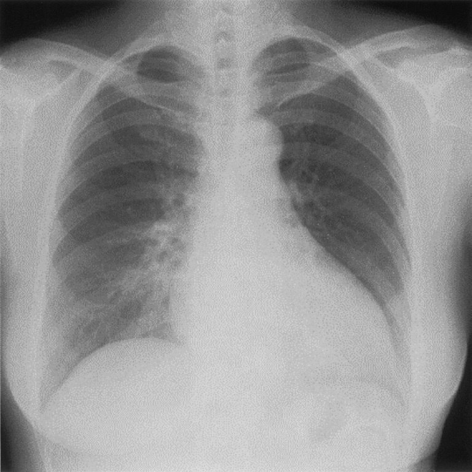
ａ 肺動脈楔入圧上昇
ｂ 平均肺動脈圧上昇
ｃ 左室- 大動脈圧較差
ｄ dip and plateau 心内圧曲線
ｅ 肺体血流量比（Qp/Qs）の増加
✅
ａ 肺動脈楔入圧上昇 ＋ ｂ 平均肺動脈圧上昇
急性心不全の初期治療：まず酸素投与と利尿薬（うっ血解除）が優先される。
❤️ 急性心不全の初期治療（LMNOP）
L：Loop diuretic（フロセミド）M：Morphine（モルヒネ、呼吸困難軽減）
N：Nitrate（硝酸薬、前負荷軽減）
O：Oxygen（酸素）
P：Position（座位/半坐位）
最初に行うのは酸素投与と利尿薬投与（フロセミド）
🎯 国試ポイント
急性心不全初期治療の優先順位：①酸素（SpO₂低下なら）②利尿薬（フロセミド静注）③硝酸薬（収縮期圧>90の場合）。強心薬（ドパミン・DOB）は循環不全時に追加。🔍 選択肢解説
拡張型心筋症による左心不全＋肺高血圧。a 肺動脈楔入圧上昇：左心不全でPCWP上昇。✓
b 平均肺動脈圧上昇：肺高血圧。✓
c 左室-大動脈圧較差：ASの所見で該当しない。
d dip and plateau心内圧曲線：収縮性心膜炎の所見。
e 肺体血流量比(Qp/Qs)の増加：短絡疾患の所見。
Q.83(119E-43)★正答率 96%
連問 1/274 歳の女性。感冒様症状を主訴に来院した。
現病歴：現在、医療機関に通院していない。2 週間前から、微熱と咳嗽が続き、①食欲が低下している。市販の感冒
薬を服用したが、改善しないため受診した。
既往歴：小学生の時に気管支喘息、22 歳時に虫垂炎、54 歳時に胆石症、68 歳時に脊椎圧迫骨折、70 歳時に悪性リン
パ腫。
生活歴：喫煙歴と飲酒歴はない。
家族歴：母は乳癌で死亡。
現 症：意識は清明。身長160cm、体重58kg。体温36.3℃。脈拍84/ 分、整。血圧120/78mmHg。呼吸数20/ 分。
SpO2 86％（room air）。眼瞼結膜と眼球結膜とに異常を認めない。②頸静脈の怒張を認める。頸部リンパ節を触知
しない。心音に異常を認めない。③両肺野にcoarse crackles を聴取する。腹部は腸雑音に異常を認めない。④肋
骨弓下に肝を1cm 触知する。⑤両下肢に圧痕性の浮腫を認める。
検査所見：尿所見：蛋白（－）、糖（－）、ケトン体（－）、潜血（－）、沈渣に異常を認めない。血液所見：赤血球454 万、
Hb 13.2g/dL、Ht 42％、白血球7,000、血小板18 万、D ダイマー2.6μg/mL（基準1.0 以下）。血液生化学所見：
アルブミン3.9g/dL、総ビリルビン1.2mg/dL、AST 24U/L、ALT 18U/L、LD 182U/L（基準124 ～222）、CK
62U/L（基準41 ～153）、尿素窒素14mg/dL、クレアチニン0.9mg/dL、尿酸6.9mg/dL、血糖84mg/dL、HbA1c 5.8％（基
準4.9 ～6.0）、トリグリセリド74mg/dL、HDL コレステロール36mg/dL、LDL コレステロール76mg/dL、Na
132mEq/L、K 4.0mEq/L、BNP 356pg/mL（基準18.4 以下）。CRP 0.3mg/dL。心電図に異常を認めない。胸部エッ
クス線写真で心胸郭比56％、軽度のうっ血を認める。心エコー検査で左室駆出率32％であった。
下線部のうち、左心不全に特徴的な徴候はどれか。
現病歴：現在、医療機関に通院していない。2 週間前から、微熱と咳嗽が続き、①食欲が低下している。市販の感冒
薬を服用したが、改善しないため受診した。
既往歴：小学生の時に気管支喘息、22 歳時に虫垂炎、54 歳時に胆石症、68 歳時に脊椎圧迫骨折、70 歳時に悪性リン
パ腫。
生活歴：喫煙歴と飲酒歴はない。
家族歴：母は乳癌で死亡。
現 症：意識は清明。身長160cm、体重58kg。体温36.3℃。脈拍84/ 分、整。血圧120/78mmHg。呼吸数20/ 分。
SpO2 86％（room air）。眼瞼結膜と眼球結膜とに異常を認めない。②頸静脈の怒張を認める。頸部リンパ節を触知
しない。心音に異常を認めない。③両肺野にcoarse crackles を聴取する。腹部は腸雑音に異常を認めない。④肋
骨弓下に肝を1cm 触知する。⑤両下肢に圧痕性の浮腫を認める。
検査所見：尿所見：蛋白（－）、糖（－）、ケトン体（－）、潜血（－）、沈渣に異常を認めない。血液所見：赤血球454 万、
Hb 13.2g/dL、Ht 42％、白血球7,000、血小板18 万、D ダイマー2.6μg/mL（基準1.0 以下）。血液生化学所見：
アルブミン3.9g/dL、総ビリルビン1.2mg/dL、AST 24U/L、ALT 18U/L、LD 182U/L（基準124 ～222）、CK
62U/L（基準41 ～153）、尿素窒素14mg/dL、クレアチニン0.9mg/dL、尿酸6.9mg/dL、血糖84mg/dL、HbA1c 5.8％（基
準4.9 ～6.0）、トリグリセリド74mg/dL、HDL コレステロール36mg/dL、LDL コレステロール76mg/dL、Na
132mEq/L、K 4.0mEq/L、BNP 356pg/mL（基準18.4 以下）。CRP 0.3mg/dL。心電図に異常を認めない。胸部エッ
クス線写真で心胸郭比56％、軽度のうっ血を認める。心エコー検査で左室駆出率32％であった。
下線部のうち、左心不全に特徴的な徴候はどれか。
ａ ①
ｂ ②
ｃ ③
ｄ ④
ｅ ⑤
✅
ｃ ③
下線部③＝両肺野のcoarse crackles。肺うっ血＝左心不全に特徴的。①食欲低下・②頸静脈怒張・④肝腫大・⑤下腿浮腫は右心不全（体静脈うっ血）の徴候。
📋 慢性心不全（HFrEF）の予後改善薬
| 薬剤 | 機序・備考 |
|---|---|
| ACE阻害薬/ARB | 神経体液性因子（RAAS）阻害→心リモデリング↓ |
| β遮断薬（カルベジロール等） | 交感神経抑制→心保護・突然死↓ |
| MRA（スピロノラクトン等） | アルドステロン拮抗→心リモデリング↓・K保持 |
| SGLT2阻害薬（エンパグリフロジン等） | 最新エビデンス→HFpEFにも有効 |
| ×ジゴキシン | 症状改善・入院減少のみ、予後改善なし |
| ×フロセミド（利尿薬） | 症状改善のみ、予後改善なし |
🎯 国試ポイント
HFrEFの予後改善「四本柱」：ACE阻害薬・β遮断薬・MRA・SGLT2阻害薬。ジゴキシン・利尿薬は症状改善のみ。β遮断薬は急性心不全増悪期には使用しない。🔍 選択肢解説
心不全を示唆する所見を選ぶ。a ①食欲低下・b ②頸静脈怒張：うっ血の所見だが本問の正解は③。
c ③：心不全に特徴的な下線部の所見。✓
d ④・e ⑤：本問の該当所見でない。
Q.84(119E-44)★正答率 92%
連問 2/2次の文を読み、83 と84 の問いに答えよ。
74 歳の女性。感冒様症状を主訴に来院した。
現病歴：現在、医療機関に通院していない。2 週間前から、微熱と咳嗽が続き、①食欲が低下している。市販の感冒薬を服用したが、改善しないため受診した。
既往歴：小学生の時に気管支喘息、22 歳時に虫垂炎、54 歳時に胆石症、68 歳時に脊椎圧迫骨折、70 歳時に悪性リンパ腫。
生活歴：喫煙歴と飲酒歴はない。
家族歴：母は乳癌で死亡。
現症：意識は清明。身長160cm、体重58kg。体温36.3℃。脈拍84/分、整。血圧120/78mmHg。呼吸数20/分。SpO₂ 86％（room air）。眼瞼結膜と眼球結膜とに異常を認めない。②頸静脈の怒張を認める。頸部リンパ節を触知しない。心音に異常を認めない。③両肺野にcoarse cracklesを聴取する。腹部は腸雑音に異常を認めない。④肋骨弓下に肝を1cm触知する。⑤両下肢に圧痕性の浮腫を認める。
検査所見：尿所見：蛋白（－）、糖（－）、ケトン体（－）、潜血（－）、沈渣に異常を認めない。血液所見：赤血球454 万、Hb 13.2g/dL、Ht 42％、白血球7,000、血小板18 万、D ダイマー2.6μg/mL（基準1.0 以下）。血液生化学所見：アルブミン3.9g/dL、総ビリルビン1.2mg/dL、AST 24U/L、ALT 18U/L、LD 182U/L（基準124〜222）、CK 62U/L（基準41〜153）、尿素窒素14mg/dL、クレアチニン0.9mg/dL、尿酸6.9mg/dL、血糖84mg/dL、HbA1c 5.8％（基準4.9〜6.0）、トリグリセリド74mg/dL、HDLコレステロール36mg/dL、LDLコレステロール76mg/dL、Na 132mEq/L、K 4.0mEq/L、BNP 356pg/mL（基準18.4 以下）。CRP 0.3mg/dL。心電図に異常を認めない。胸部エックス線写真で心胸郭比56％、軽度のうっ血を認める。心エコー検査で左室駆出率32％であった。薬剤性の心筋障害を疑った場合、既往歴のうち特に詳細に聴取すべき病歴はどれか。
74 歳の女性。感冒様症状を主訴に来院した。
現病歴：現在、医療機関に通院していない。2 週間前から、微熱と咳嗽が続き、①食欲が低下している。市販の感冒薬を服用したが、改善しないため受診した。
既往歴：小学生の時に気管支喘息、22 歳時に虫垂炎、54 歳時に胆石症、68 歳時に脊椎圧迫骨折、70 歳時に悪性リンパ腫。
生活歴：喫煙歴と飲酒歴はない。
家族歴：母は乳癌で死亡。
現症：意識は清明。身長160cm、体重58kg。体温36.3℃。脈拍84/分、整。血圧120/78mmHg。呼吸数20/分。SpO₂ 86％（room air）。眼瞼結膜と眼球結膜とに異常を認めない。②頸静脈の怒張を認める。頸部リンパ節を触知しない。心音に異常を認めない。③両肺野にcoarse cracklesを聴取する。腹部は腸雑音に異常を認めない。④肋骨弓下に肝を1cm触知する。⑤両下肢に圧痕性の浮腫を認める。
検査所見：尿所見：蛋白（－）、糖（－）、ケトン体（－）、潜血（－）、沈渣に異常を認めない。血液所見：赤血球454 万、Hb 13.2g/dL、Ht 42％、白血球7,000、血小板18 万、D ダイマー2.6μg/mL（基準1.0 以下）。血液生化学所見：アルブミン3.9g/dL、総ビリルビン1.2mg/dL、AST 24U/L、ALT 18U/L、LD 182U/L（基準124〜222）、CK 62U/L（基準41〜153）、尿素窒素14mg/dL、クレアチニン0.9mg/dL、尿酸6.9mg/dL、血糖84mg/dL、HbA1c 5.8％（基準4.9〜6.0）、トリグリセリド74mg/dL、HDLコレステロール36mg/dL、LDLコレステロール76mg/dL、Na 132mEq/L、K 4.0mEq/L、BNP 356pg/mL（基準18.4 以下）。CRP 0.3mg/dL。心電図に異常を認めない。胸部エックス線写真で心胸郭比56％、軽度のうっ血を認める。心エコー検査で左室駆出率32％であった。薬剤性の心筋障害を疑った場合、既往歴のうち特に詳細に聴取すべき病歴はどれか。
ａ 気管支喘息
ｂ 虫垂炎
ｃ 胆石症
ｄ 脊椎圧迫骨折
ｅ 悪性リンパ腫
✅
ｅ 悪性リンパ腫
ForrresterサブセットⅣ（CI低・PCWP高）→心原性ショック→強心薬（ドパミン・DOB）が必要。
📋 Forrester分類
| サブセット | 状態 | 治療 |
|---|---|---|
| Ⅰ | CI≥2.2、PCWP≤18 | 正常→維持療法 |
| Ⅱ | CI≥2.2、PCWP>18 | うっ血あり心拍出量正常→利尿薬・硝酸薬 |
| Ⅲ | CI<2.2、PCWP≤18 | 低灌流（循環血液量不足）→輸液 |
| Ⅳ | CI<2.2、PCWP>18 | 心原性ショック→強心薬（DOB・ドパミン）+IABP |
🎯 国試ポイント
ForrresterⅣ：CI<2.2かつPCWP>18→最重症。強心薬（ドブタミン・ドパミン）、必要に応じてIABP・PCPS。PCWP=肺動脈楔入圧（正常6〜12mmHg）。🔍 選択肢解説
a 気管支喘息〜d 脊椎圧迫骨折：心不全の背景として主でない。e 悪性リンパ腫：化学療法(アントラサイクリン)等による心筋障害の背景。✓
Q.85(118D-32)📷 画像★正答率 93%
64 歳の男性。定期受診で来院した。8 年前に糖尿病、1 年半前に急性前壁心筋梗塞を発症し慢性心不全と診断され自宅近くの診療所に通院している。アスピリン、アンジオテンシン変換酵素〈ACE〉阻害薬、カルベジロール、スピロノラクトン、スタチン及びプロトンポンプ阻害薬を内服している。定期受診時に浮腫を認めた。意識は清明。身長170cm、体重80kg。体温36.2℃。脈拍84/ 分、整。血圧108/76mmHg。SpO2 98％（room air）。皮膚は湿潤。頸静脈の怒張を認める。心音と呼吸音とに異常を認めない。腹部は平坦、軟で、肝・脾を触知しない。四肢末梢に冷感を認めない。両下腿に浮腫を認める。尿所見：蛋白（－）、糖1 ＋。血液所見：赤血球436 万、Hb 13.2g/dL、白血球8,000、
血小板28 万。血液生化学所見：総ビリルビン1.2mg/dL、AST 48U/L、ALT 42U/L、CK 72U/L（基準59 ～248）、
尿素窒素12mg/dL、クレアチニン0.7mg/dL、血糖124mg/dL、HbA1c 6.9％（基準4.9 ～6.0）、LDL コレステロール80mg/dL、Na 132mEq/L、K 4.8mEq/L、BNP 216pg/mL（基準18.4 以下）。CRP 0.8mg/dL。12 誘導心電図を示す。胸部エックス線写真で心陰影の拡大と軽度のうっ血を示す。心エコー検査で駆出率42％、前壁の菲薄化を認め、
下大静脈径の増大と呼吸性変動の低下を認める。
予後を改善するために追加すべき薬剤はどれか。
血小板28 万。血液生化学所見：総ビリルビン1.2mg/dL、AST 48U/L、ALT 42U/L、CK 72U/L（基準59 ～248）、
尿素窒素12mg/dL、クレアチニン0.7mg/dL、血糖124mg/dL、HbA1c 6.9％（基準4.9 ～6.0）、LDL コレステロール80mg/dL、Na 132mEq/L、K 4.8mEq/L、BNP 216pg/mL（基準18.4 以下）。CRP 0.8mg/dL。12 誘導心電図を示す。胸部エックス線写真で心陰影の拡大と軽度のうっ血を示す。心エコー検査で駆出率42％、前壁の菲薄化を認め、
下大静脈径の増大と呼吸性変動の低下を認める。
予後を改善するために追加すべき薬剤はどれか。
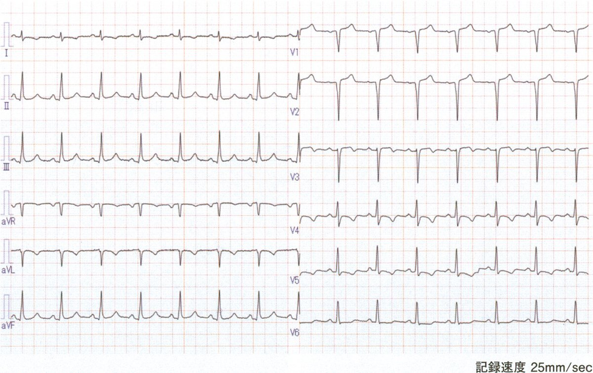
ａ α遮断薬
ｂ ベラパミル
ｃ SGLT2 阻害薬
ｄ スルホニル尿素薬
ｅ アンジオテンシンⅡ受容体拮抗薬
✅
ｃ SGLT2阻害薬
SGLT2阻害薬は心不全の予後改善エビデンスあり（HFrEF・HFpEF両方）。
❤️ SGLT2阻害薬と心不全
SGLT2阻害薬（エンパグリフロジン・ダパグリフロジン等）の心不全への効果：①心不全入院リスク低下（EMPA-REG OUTCOME等の大規模試験）
②HFrEF・HFpEFの両方で有効（HFpEFへの初のエビデンス）
③利尿作用・心臓保護作用
④糖尿病の有無に関わらず有効
📋 選択肢の検討
| 選択肢 | 判定 | 解説 |
|---|---|---|
| a: α遮断薬 | × | 心不全の予後改善なし、降圧のみ |
| b: ベラパミル | × 禁忌 | 非ジヒドロピリジン系Ca拮抗薬→陰性変力作用→心不全禁忌 |
| c: SGLT2阻害薬 | ◎ | 心不全予後改善エビデンス（HFrEF・HFpEF両方） |
| d: スルホニル尿素薬 | × | 心不全への予後改善なし・低血糖リスク |
| e: ARB | × | すでにACE阻害薬使用中→ACE阻害薬+ARB併用は腎機能悪化リスク↑（原則禁忌） |
🎯 国試ポイント
SGLT2阻害薬は心不全合併糖尿病患者の第一選択薬の一つ。糖尿病の有無にかかわらず心不全に適応。ベラパミル・ジルチアゼム（非DHP型Ca拮抗薬）は心不全禁忌。ACE阻害薬+ARBの併用は原則禁忌。🔍 選択肢解説
陳旧性MI後の慢性心不全＋糖尿病＋浮腫。a α遮断薬：心不全の予後改善でない。
b ベラパミル：HFrEFを増悪させ不適。
c SGLT2阻害薬：心不全＋糖尿病で予後改善(SGLT2阻害薬)。✓
d スルホニル尿素薬：主でない。
e ARB：既にACE阻害薬内服中。
Q.86(118D-69)📷 画像★2択正答率 96%
62 歳の男性。動悸と呼吸困難を主訴に来院した。以前の健診で心雑音を指摘されたが、自覚症状がないのでそのままにしていた。3 か月前から動悸があり、最近は徐々に持続時間が長くなっている。自分で脈を触れたところ脈のリズムは不整だったという。1 週間前から就寝時に息苦しさがあり不眠である。3 日前からは体動時の息苦しさも出現している。2 日前の動悸発作は約1 時間持続していた。身長168cm、体重67kg。体温36.0℃。脈拍68/ 分、
整。血圧120/68mmHg。呼吸数14/ 分。SpO2 97％（room air）。眼瞼結膜と眼球結膜とに異常を認めない。心音は心尖部を最強点とするLevine 3/6 の汎収縮期雑音を聴取する。呼吸音に異常を認めない。下腿浮腫を認めない。血液所見：赤血球411 万、Hb 13.7g/dL、Ht 42％、白血球7,600、血小板24 万。血液生化学所見：総蛋白6.9g/dL、
AST 30U/L、ALT 22U/L、LD 201U/L（基準124 ～222）、尿素窒素18mg/dL、クレアチニン0.9mg/dL、Na136mEq/L、K 3.7mEq/L、Cl 110mEq/L、TSH 0.2μU/mL（基準0.2 ～4.0）、FT4 1.0ng/dL（基準0.8 ～2.2）、脳性ナトリウム利尿ペプチド〈BNP〉408pg/mL（基準18.4 以下）。CRP 0.1mg/dL。非発作時の心電図（A）、胸部エックス線写真（B）、心エコー検査の傍胸骨長軸像（C）及び心尖部四腔断層像（D）を示す。
この患者の病態で考えられるのはどれか。2 つ選べ。
整。血圧120/68mmHg。呼吸数14/ 分。SpO2 97％（room air）。眼瞼結膜と眼球結膜とに異常を認めない。心音は心尖部を最強点とするLevine 3/6 の汎収縮期雑音を聴取する。呼吸音に異常を認めない。下腿浮腫を認めない。血液所見：赤血球411 万、Hb 13.7g/dL、Ht 42％、白血球7,600、血小板24 万。血液生化学所見：総蛋白6.9g/dL、
AST 30U/L、ALT 22U/L、LD 201U/L（基準124 ～222）、尿素窒素18mg/dL、クレアチニン0.9mg/dL、Na136mEq/L、K 3.7mEq/L、Cl 110mEq/L、TSH 0.2μU/mL（基準0.2 ～4.0）、FT4 1.0ng/dL（基準0.8 ～2.2）、脳性ナトリウム利尿ペプチド〈BNP〉408pg/mL（基準18.4 以下）。CRP 0.1mg/dL。非発作時の心電図（A）、胸部エックス線写真（B）、心エコー検査の傍胸骨長軸像（C）及び心尖部四腔断層像（D）を示す。
この患者の病態で考えられるのはどれか。2 つ選べ。
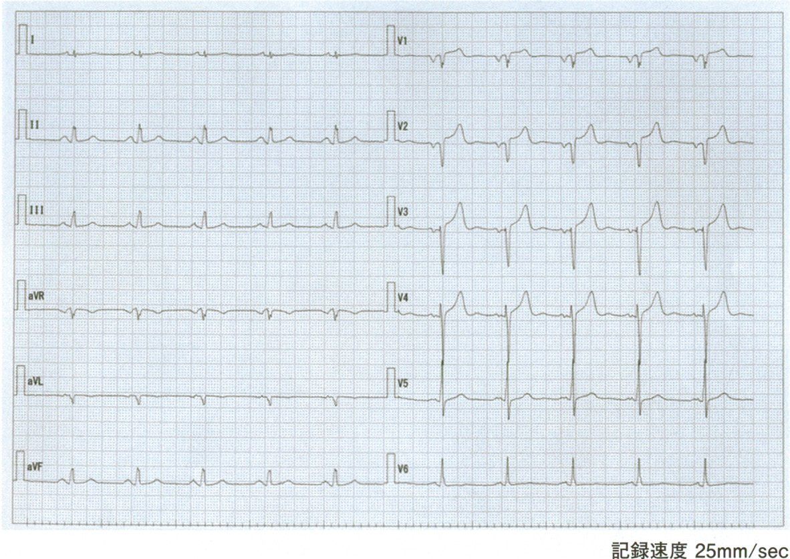
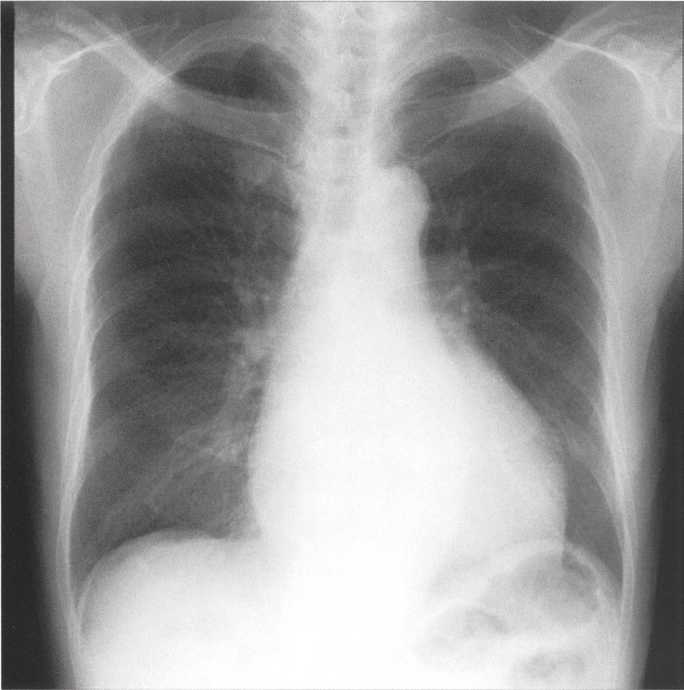
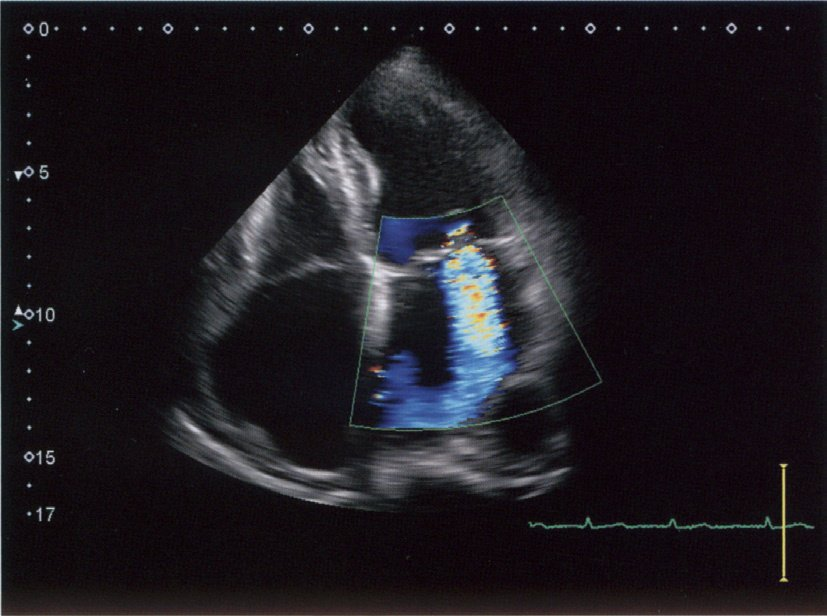
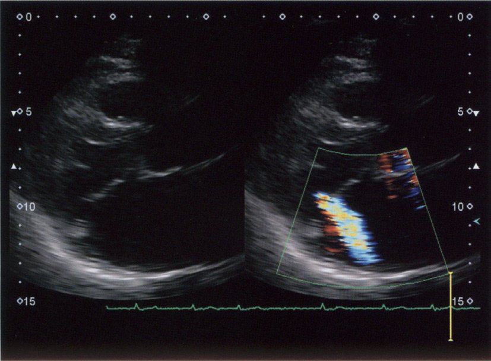
ａ 肺 炎
ｂ 貧 血
ｃ 心不全
ｄ 心房細動
ｅ 甲状腺機能亢進症
✅
ｃ 心不全 ＋ ｄ 心房細動
弁膜症患者で心房細動発症→心不全増悪。心房細動と心不全が同時に合併。
❤️ 弁膜症と合併症
弁膜症（心雑音の原因）からの増悪メカニズム：①弁膜症→心房細動（心房拡大→電気的リモデリング）
②心房細動（心拍出量↓・心房収縮消失）→心不全増悪
③不規則脈（動悸）＋呼吸困難（肺うっ血）が同時に出現
弁膜症は心房細動の最大のリスク因子の一つ
📋 選択肢の検討
| 選択肢 | 判定 | 解説 |
|---|---|---|
| a: 肺炎 | △ | 呼吸困難あるが動悸の説明困難・弁膜症との直接関連薄い |
| b: 貧血 | △ | 動悸・息切れあるが心雑音増悪との関連薄い |
| c: 心不全 | ◎ | 弁膜症増悪→肺うっ血→呼吸困難 |
| d: 心房細動 | ◎ | 弁膜症→心房拡大→Afib→動悸・心不全悪化 |
| e: 甲状腺機能亢進症 | △ | 動悸あるが既往の心雑音との直接関連薄い |
🎯 国試ポイント
弁膜症（特に僧帽弁疾患）＋心房細動の合併が多い。心房細動→心拍出量↓（心房収縮消失・頻脈）→心不全増悪。不規則脈（動悸）と呼吸困難の組み合わせ→弁膜症+Afib+心不全を疑う。🔍 選択肢解説
a 肺炎：合わない。b 貧血：所見が乏しい。
c 心不全：起座呼吸・体動時息切れ。✓
d 心房細動：不整な脈・動悸。✓
e 甲状腺機能亢進症：主でない。
Q.87(117B-29)★正答率 38%
76 歳の女性。高血圧と慢性心不全のため入院していた。退院後は自宅近くの診療所に通院し、かかりつけ医の指導により自宅で毎朝体温、脈拍、血圧および体重の測定を行い、下腿浮腫の有無を確認している。
体液の過剰状態を早期に判断するために最も信頼度が高い項目はどれか。
体液の過剰状態を早期に判断するために最も信頼度が高い項目はどれか。
ａ 体 温
ｂ 脈 拍
ｃ 血 圧
ｄ 体 重
ｅ 浮 腫
✅
ｄ 体 重
日本循環器学会ガイドラインでは心不全患者の食塩摂取量は6g/日未満を推奨。
🎯 国試ポイント
心不全の塩分制限：6g/日未満（日本のガイドライン）。ただし過剰な制限（<3g/日）は電解質異常・予後悪化のリスクあり。水分制限：重症例では1〜1.5L/日。🔍 選択肢解説
a 体温：体液貯留の指標でない。b 脈拍：非特異的。
c 血圧：非特異的。
d 体重：体重増加が体液貯留の最も鋭敏な指標。✓
e 浮腫：出現は体重増加より遅い。
Q.88(113D-25)★正答率 92%
62 歳の女性。呼吸困難を主訴に救急車で搬入された。数日前から風邪気味で、昨日から動くと息苦しいと訴えていた。今朝息苦しさが強くなったため家族が救急車を要請した。意識は清明。体温38.5℃。心拍数120/ 分、整。血圧86/46mmHg。呼吸数28/ 分。SpO2 88％（リザーバー付マスク10L/ 分酸素投与下）。心雑音はないが、心音は奔馬調律である。全胸部にcoarse crackles を聴取する。胸部エックス線写真で右下肺野を優位とする両肺野浸潤影を認めた。気管挿管後ICU に入室し人工呼吸を開始した。血液所見：赤血球345 万、Hb 11.4g/dL、Ht 34％、白血球12,800、血小板23 万。血液生化学所見：総蛋白5.9g/dL、アルブミン2.8g/dL、総ビリルビン0.9mg/dL、AST 283U/L、
ALT 190U/L、LD 392U/L（基準176 ～353）、尿素窒素13mg/dL、クレアチニン0.3mg/dL、CK 439U/L（基準30～140）、脳性ナトリウム利尿ペプチド〈BNP〉1,728pg/mL（基準18.4 以下）。CRP 2.0mg/dL。12 誘導心電図で前胸部誘導に陰性T 波を認める。心エコー検査で左室はびまん性に壁運動が低下し、左室駆出率は30％。血行動態を把握するため肺動脈カテーテルを挿入した。
この患者の測定値と考えられるのはどれか。
（単位：心係数は L/min/m2、他は mmHg）
ALT 190U/L、LD 392U/L（基準176 ～353）、尿素窒素13mg/dL、クレアチニン0.3mg/dL、CK 439U/L（基準30～140）、脳性ナトリウム利尿ペプチド〈BNP〉1,728pg/mL（基準18.4 以下）。CRP 2.0mg/dL。12 誘導心電図で前胸部誘導に陰性T 波を認める。心エコー検査で左室はびまん性に壁運動が低下し、左室駆出率は30％。血行動態を把握するため肺動脈カテーテルを挿入した。
この患者の測定値と考えられるのはどれか。
（単位：心係数は L/min/m2、他は mmHg）
ａ 心係数 6.0／平均右房圧 10／平均肺動脈圧 15／肺動脈楔入圧 10
ｂ 心係数 4.0／平均右房圧 10／平均肺動脈圧 15／肺動脈楔入圧 10
ｃ 心係数 4.0／平均右房圧 5／平均肺動脈圧 10／肺動脈楔入圧 5
ｄ 心係数 2.0／平均右房圧 5／平均肺動脈圧 10／肺動脈楔入圧 5
ｅ 心係数 2.0／平均右房圧 15／平均肺動脈圧 25／肺動脈楔入圧 20
✅
ｅ 心係数 2.0／平均右房圧 15／平均肺動脈圧 25／肺動脈楔入圧 20
心係数2.0（低灌流）＋肺動脈楔入圧20mmHg（肺うっ血）＝Forrester IV群。平均右房圧15mmHgも上昇し右心系にもうっ血が及んでいる。
❤️ 心不全の在宅管理
毎日の体重測定が重要：2〜3日で2kg以上増加→水分貯留（受診の目安）塩分制限：6g/日未満
適度な運動：心臓リハビリ（安定期）
禁煙・禁酒：心筋保護
×体重増加を放置→浮腫増悪・入院リスク↑
🎯 国試ポイント
体重モニタリング：心不全患者は毎朝同条件で計測。2kg以上増加→塩分・水分過多→受診・利尿薬調整。自己管理（self-management）教育が再入院予防に重要。🔍 選択肢解説
非心原性(ARDS/敗血症)の肺水腫では肺動脈楔入圧は上昇しない。a 6.0〜d 2.0：本病態の血行動態値と合致しない組合せ。
e 2.0：楔入圧は正常〜低値で非心原性肺水腫を示す組合せ。✓
Q.89(111B-3)★正答率 43%
高血圧性心疾患の患者が、肺水腫を急激に発症し、急性心不全と診断された。洞性頻脈で血圧は170/100mmHg である。浮腫などの体液貯留を認めない。
呼吸管理とともにまず行う治療はどれか。
呼吸管理とともにまず行う治療はどれか。
ａ 利尿薬の投与
ｂ ジギタリスの投与
ｃ 血管拡張薬の投与
ｄ ドブタミンの投与
ｅ 生理食塩液の急速輸液
✅
ｃ 血管拡張薬の投与
高血圧性心不全（後負荷↑が主因）→体液貯留なし→血管拡張薬で後負荷軽減が最優先。
❤️ 高血圧性心不全の病態と治療
病態：高血圧→後負荷↑↑→左室拡張末期圧↑→肺静脈圧↑→肺水腫体液過剰（浮腫）は目立たないことが多い（後負荷型心不全）
治療：
①血管拡張薬（第一選択）：ニトロプルシド（静注）・ニトログリセリン→後負荷↓・前負荷↓
②酸素投与：SpO₂改善
③体液過剰時のみ利尿薬追加
×利尿薬単独：体液貯留がない場合は前負荷過剰に対応できない・腎前性腎不全リスク
📋 選択肢の検討
| 選択肢 | 判定 | 解説 |
|---|---|---|
| a: 利尿薬 | △ | 体液過剰がない場合は効果不十分・脱水リスク |
| b: ジギタリス | × | 急性期の適応少ない・毒性リスク |
| c: 血管拡張薬 | ◎ | 後負荷↓（ニトロプルシド・ニトログリセリン）→高血圧性心不全の第一選択 |
| d: ドブタミン | × | 収縮力改善薬→高血圧性心不全では後負荷軽減が優先 |
| e: 生食急速輸液 | × 禁忌 | 肺水腫に輸液→前負荷↑↑→悪化 |
🎯 国試ポイント
高血圧性肺水腫（体液過剰なし）→血管拡張薬（ニトロプルシド・ニトログリセリン）が第一選択。後負荷型心不全のキーワード。浮腫・体液過剰あれば利尿薬追加。ドブタミンは低心拍出性心不全（CI↓）に使用。🔍 選択肢解説
高血圧性の急性肺水腫(体液貯留なし)。a 利尿薬の投与：体液貯留がなく第一でない。
b ジギタリスの投与：不適。
c 血管拡張薬の投与：高血圧性急性心不全に血管拡張薬(後負荷軽減)。✓
d ドブタミンの投与：血圧が保たれ不要。
e 生理食塩液の急速輸液：肺水腫に禁忌。
Q.90(111C-15)★正答率 66%
聴診上wheezes のある患者の病態として気管支喘息よりうっ血性心不全を疑わせる所見はどれか。
ａ Ⅳ音の出現
ｂ 咳嗽の増加
ｃ 頸静脈の虚脱
ｄ 呼吸数の増加
ｅ 起坐呼吸の出現
✅
ａ Ⅳ音の出現
カルペリチドはBNPアナログ。利尿作用・血管拡張（静脈）→前負荷軽減が主作用。
❤️ カルペリチド（hANP、ハンプ）
ヒト心房性ナトリウム利尿ペプチド（hANP）のアナログ作用：①前負荷軽減（静脈拡張・利尿）②後負荷軽減（動脈拡張）③RAAS抑制
適応：急性心不全のうっ血改善
禁忌：低血圧（収縮期圧<90mmHg）
🎯 国試ポイント
カルペリチド（hANP）＝前負荷軽減。ニトログリセリン（静脈拡張→前負荷↓）と類似。ニトロプルシドは前後負荷両方↓。ドブタミンは後負荷不変で心収縮力↑。🔍 選択肢解説
a Ⅳ音の出現：心疾患(うっ血性心不全)を示唆。✓b 咳嗽の増加：両者でみられる。
c 頸静脈の虚脱：心不全は怒張で逆。
d 呼吸数の増加：両者でみられる。
e 起坐呼吸の出現：両者でみられうる。
Q.91(111G-58)★2択正答率 63%
75 歳の女性。交通外傷による肝損傷の緊急手術後で2 日前からICU に入院中である。術前、術中に一時的に大量の輸液と輸血が行われた。術後はICU に入室して人工呼吸管理を受けていたが、気管からピンク色泡沫状の分泌物が吸引されるようになった。心拍数110/ 分、整。血圧112/64mmHg。中心静脈圧16mmHg。頸静脈の怒張を認め、
両側の胸部にcoarse crackles を聴取する。動脈血ガス分析（FIO2 0.6）：pH 7.35、PaCO2 40Torr、PaO2 70Torr、
HCO3 － 23mEq/L。胸部エックス線写真で心胸郭比75％、両肺野に浸潤影を認める。心エコーで左室駆出率35％。
この時点で考えるべき治療薬はどれか。2 つ選べ。
両側の胸部にcoarse crackles を聴取する。動脈血ガス分析（FIO2 0.6）：pH 7.35、PaCO2 40Torr、PaO2 70Torr、
HCO3 － 23mEq/L。胸部エックス線写真で心胸郭比75％、両肺野に浸潤影を認める。心エコーで左室駆出率35％。
この時点で考えるべき治療薬はどれか。2 つ選べ。
ａ ドブタミン
ｂ フロセミド
ｃ ジルチアゼム
ｄ ノルアドレナリン
ｅ プロプラノロール
✅
ａ ドブタミン ＋ ｂ フロセミド
ベラパミル（Ca拮抗薬、非ジヒドロピリジン系）は心収縮力↓→心不全禁忌。
📋 心不全に対する薬剤の適否
| 分類 | 薬剤 |
|---|---|
| 使用可・予後改善 | ACE阻害薬・ARB・β遮断薬（安定期）・MRA・SGLT2阻害薬 |
| 症状改善 | 利尿薬（フロセミド）・ジゴキシン・硝酸薬 |
| 禁忌/原則禁忌 | ベラパミル（心収縮↓）・ジルチアゼム・NSAIDs（Na貯留）・チアゾリジン系（体液貯留） |
🎯 国試ポイント
心不全禁忌：ベラパミル・ジルチアゼム（非DHP型Ca拮抗薬）→陰性変力作用→心不全悪化。ジヒドロピリジン系（アムロジピン等）は使用可。🔍 選択肢解説
術後の輸液過剰による心不全(EF低下・肺水腫)。a ドブタミン：低心機能に強心薬。✓
b フロセミド：体液過剰に利尿薬。✓
c ジルチアゼム：陰性変力で不適。
d ノルアドレナリン：血圧が保たれ不要。
e プロプラノロール：急性心不全に禁忌。
Q.92(108B-38)★2択正答率 86%
急性心不全患者で、肺うっ血を呈しているが末梢循環不全の所見を伴わない場合の治療薬として適切なのはどれか。
2 つ選べ。
2 つ選べ。
ａ フロセミド
ｂ アドレナリン
ｃ ニトログリセリン
ｄ ノルアドレナリン
ｅ プロプラノロール
✅
ａ フロセミド ＋ ｃ ニトログリセリン
Forrester II（うっ血あり・CI正常）→利尿薬（フロセミド）＋血管拡張薬（ニトログリセリン）。
❤️ Forrester IIの治療
Forrester II：PCWP>18（うっ血あり）・CI≥2.2（心拍出量正常）→末梢循環不全なし・肺うっ血あり
治療方針：
①利尿薬（フロセミド）：PCWP↓・うっ血解除
②ニトログリセリン（硝酸薬）：前負荷↓・静脈拡張
強心薬・昇圧薬は不要（CI正常のため）
📋 選択肢の検討
| 選択肢 | 判定 | 解説 |
|---|---|---|
| a: フロセミド | ◎ | ループ利尿薬→うっ血解除（PCWP↓） |
| b: アドレナリン | × | 昇圧強心薬→CI正常時は不要・頻脈・不整脈リスク |
| c: ニトログリセリン | ◎ | 前負荷軽減（静脈拡張）→肺うっ血改善 |
| d: ノルアドレナリン | × | 昇圧薬→後負荷↑→心不全増悪リスク |
| e: プロプラノロール | × 禁忌 | 非選択的β遮断薬→急性心不全には禁忌（心収縮↓） |
🎯 国試ポイント
Forrester分類を軸に治療薬を選ぶ：II（うっ血あり・CI正常）→利尿薬＋硝酸薬。IV（うっ血あり・CI低下）→強心薬追加。III（うっ血なし・CI低下）→輸液。急性心不全にβ遮断薬は禁忌（安定期HFrEFでは有効）。🔍 選択肢解説
肺うっ血あり・末梢循環不全なし(warm-wet)。a フロセミド：うっ血に利尿薬。✓
b アドレナリン：不適。
c ニトログリセリン：血管拡張薬(前負荷軽減)。✓
d ノルアドレナリン：末梢循環不全がなく不要。
e プロプラノロール：急性心不全に禁忌。
Q.93(106G-50)★正答率 56%
62 歳の女性。数日前からの息切れと全身倦怠感とを主訴に来院した。心不全の治療のために専門外来に通っていたが、症状が安定したので3 か月前に自宅近くの診療所を紹介された。同診療所を受診した際、新たに脂質異常症、
変形性膝関節症および不眠症と診断され、それぞれに対し3 週前から薬物療法が開始されたという。意識は清明。体温36.2℃。脈拍96/ 分、整。血圧122/88mmHg。呼吸数16/ 分。眼瞼結膜に貧血を認めない。眼球結膜に黄染を認めない。頸静脈の怒張を認める。心尖部でⅢ音を聴取する。両側の胸部にcoarse crackles を聴取する。腹部は平坦、
軟で、右肋骨弓下に肝を2cm 触知する。脾を触知しない。両側の下腿に圧痕性浮腫を認める。
この病態の原因になった内服薬として最も考えられるのはどれか。
変形性膝関節症および不眠症と診断され、それぞれに対し3 週前から薬物療法が開始されたという。意識は清明。体温36.2℃。脈拍96/ 分、整。血圧122/88mmHg。呼吸数16/ 分。眼瞼結膜に貧血を認めない。眼球結膜に黄染を認めない。頸静脈の怒張を認める。心尖部でⅢ音を聴取する。両側の胸部にcoarse crackles を聴取する。腹部は平坦、
軟で、右肋骨弓下に肝を2cm 触知する。脾を触知しない。両側の下腿に圧痕性浮腫を認める。
この病態の原因になった内服薬として最も考えられるのはどれか。
ａ 利尿薬
ｂ ベンゾジアゼピン系薬
ｃ HMG-CoA 還元酵素阻害薬
ｄ アンジオテンシン変換酵素阻害薬
ｅ 非ステロイド性抗炎症薬〈NSAIDs〉
✅
ｅ 非ステロイド性抗炎症薬〈NSAIDs〉
NSAIDs（非ステロイド性抗炎症薬）はNa・水貯留→心不全増悪の原因。心不全患者には原則禁忌。
❤️ 心不全を悪化させる薬剤
NSAIDs（ロキソプロフェン等）の心不全への悪影響：①COX阻害→プロスタグランジン↓→腎血管収縮→GFR↓
②Na・水貯留→体液過剰→心臓への負担↑
③浮腫悪化・利尿薬抵抗性↑
心不全を悪化させる薬剤一覧：
NSAIDs・COX-2阻害薬、非DHP型Ca拮抗薬（ベラパミル・ジルチアゼム）、チアゾリジン系（体液貯留）、抗不整脈薬（一部）
📋 選択肢の検討
| 選択肢 | 判定 | 解説 |
|---|---|---|
| a: 利尿薬 | × 継続 | 心不全の症状改善薬→中止は禁忌 |
| b: ベンゾジアゼピン | △ 慎重 | 心不全への直接悪化作用は少ない |
| c: スタチン | × 継続 | 脂質管理・虚血性心疾患予防→継続 |
| d: ACE阻害薬 | × 継続 | HFrEFの予後改善薬→中止は禁忌 |
| e: NSAIDs | ◎ 中止 | Na・水貯留→心不全増悪→原則禁忌・中止 |
🎯 国試ポイント
NSAIDsは心不全患者に原則禁忌（体液貯留・腎機能悪化・利尿薬抵抗性）。鎮痛はアセトアミノフェン（COX阻害なし）を使用。心不全増悪を誘発する薬剤：NSAIDs・非DHP-Ca拮抗薬・チアゾリジン系。🔍 選択肢解説
3週前の新規薬剤開始後の心不全増悪。a 利尿薬：心不全治療薬。
b ベンゾジアゼピン系薬：直接の増悪因子でない。
c HMG-CoA還元酵素阻害薬：増悪因子でない。
d アンジオテンシン変換酵素阻害薬：心不全治療薬。
e 非ステロイド性抗炎症薬〈NSAIDs〉：体液貯留で心不全を増悪させ中止。✓
Q.94(105A-43)★正答率 98%
68 歳の男性。呼吸困難を主訴に来院した。最近労作時の息切れを自覚するようになっていた。午前3 時ころから息苦しくなり泡沫様の痰を喀出し、臥位をとれなくなったため救急外来を受診した。夏の暑さのため食欲はないが、
麦茶を多飲している。尿量は保たれているという。60 歳時に心筋梗塞の既往がある。意識は清明。呼吸数22/ 分。
脈拍104/ 分、整。血圧116/76mmHg。頸静脈の怒張を認める。四肢末梢に冷感を認めない。両側肺野にcoarsecrackles を聴取する。心尖部にⅢ音を聴取する。右肋骨弓下に肝を4cm 触知する。経皮的動脈血酸素飽和度〈SpO2〉85％であったが、酸素吸入によってSpO2 は96％まで上昇した。
治療薬として最も適切なのはどれか。
麦茶を多飲している。尿量は保たれているという。60 歳時に心筋梗塞の既往がある。意識は清明。呼吸数22/ 分。
脈拍104/ 分、整。血圧116/76mmHg。頸静脈の怒張を認める。四肢末梢に冷感を認めない。両側肺野にcoarsecrackles を聴取する。心尖部にⅢ音を聴取する。右肋骨弓下に肝を4cm 触知する。経皮的動脈血酸素飽和度〈SpO2〉85％であったが、酸素吸入によってSpO2 は96％まで上昇した。
治療薬として最も適切なのはどれか。
ａ 去痰薬
ｂ 利尿薬
ｃ 鎮静薬
ｄ 抗菌薬
ｅ 血管拡張薬
✅
ｂ 利尿薬
急性肺水腫→まず利尿薬（フロセミド静注）でうっ血解除。
❤️ 急性肺水腫の治療
急性肺水腫の初期対応：①酸素投与（SpO₂ 90%未満なら必須）
②体位：起座位・座位（前負荷↓）
③利尿薬（フロセミド静注）：うっ血解除→肺水腫改善
④硝酸薬：前後負荷軽減（血圧保持時）
泡沫様痰：肺胞液と気道分泌液が混合→肺水腫の重症徴候
📋 選択肢の検討
| 選択肢 | 判定 | 解説 |
|---|---|---|
| a: 去痰薬 | × | 症状対症療法のみ・根本治療にならない |
| b: 利尿薬 | ◎ | フロセミド静注→うっ血解除→肺水腫改善（第一選択） |
| c: 鎮静薬 | △ | モルヒネは呼吸困難軽減に使うが最優先ではない |
| d: 抗菌薬 | × | 細菌性肺炎でなければ不要 |
| e: 血管拡張薬 | ◎ 補助 | 利尿薬と併用するが単独第一選択ではない（血圧次第） |
🎯 国試ポイント
急性肺水腫の治療優先順位：①酸素・体位②フロセミド静注（利尿薬）③硝酸薬（血圧保持時）。去痰薬・抗菌薬は不適切。血管拡張薬（ニトログリセリン）は補助的に使用。泡沫様痰＝重症肺水腫のサイン。🔍 選択肢解説
陳旧性MI＋急性心不全(肺水腫・肝腫大)。a 去痰薬：主でない。
b 利尿薬：体液過剰・肺うっ血に利尿薬。✓
c 鎮静薬：主でない。
d 抗菌薬：感染主体でない。
e 血管拡張薬：補助的。
Q.95(117D-2)正答率 79%
左室駆出率が低下した心不全を増悪させる薬剤はどれか。
ａ スタチン
ｂ ベラパミル
ｃ ACE 阻害薬
ｄ SGLT2 阻害薬
ｅ プロトンポンプ阻害薬
✅
ｂ ベラパミル
急性心不全ではまず酸素投与（SpO₂低下への対応）が最優先。
❤️ 急性左心不全の初期対応
1. 酸素投与（SpO₂<90%なら）2. 体位：座位・起座位（前負荷↓・呼吸楽）
3. モニタリング：心電図・SpO₂・血圧
4. 利尿薬：フロセミド静注（うっ血解除）
5. 硝酸薬：収縮期圧>90mmHg→前後負荷↓
🎯 国試ポイント
急性心不全：まず酸素・体位・モニター。その後利尿薬（フロセミド静注）。硝酸薬は血圧が保たれていれば追加。ショック（CI<2.2・PCWP>18）は強心薬。🔍 選択肢解説
a スタチン：増悪させない。b ベラパミル：陰性変力作用でHFrEFを増悪。✓
c ACE阻害薬：予後を改善する。
d SGLT2阻害薬：予後を改善する。
e プロトンポンプ阻害薬：増悪させない。
Q.96(117F-39)正答率 91%
52 歳の男性。労作時息切れと全身倦怠感を主訴に来院した。1 か月前から両下腿の浮腫が出現し、1 週間前から労作時息切れと全身倦怠感も自覚するようになったため受診した。15 年前から高血圧症と糖尿病で治療を受けていたが、10 か月前の転居を契機に受診を中断していた。身長176cm、体重85kg（2 か月前は78kg）。脈拍92/ 分、整。
血圧162/92mmHg。SpO2 95％（room air）。両下腿に圧痕性浮腫を認める。尿所見：蛋白3 ＋、糖2 ＋、ケトン体（－）、
潜血（－）。随時尿の尿蛋白480mg/dL、クレアチニン80mg/dL。血液所見：赤血球310 万、Hb 8.6g/dL、Ht 28％、
白血球8,600、血小板12 万。血液生化学所見：総蛋白5.2g/dL、アルブミン2.2g/dL、尿素窒素30mg/dL、クレアチニン1.6mg/dL、尿酸7.6mg/dL、血糖230mg/dL、HbA1c 8.0％（基準4.6 ～6.2）、Na 136mEq/L、K 5.8mEq/L、Cl98mEq/L、Ca 7.6mg/dL、P 5.2mg/dL。胸部エックス線写真で心拡大と肺うっ血を認める。
この患者の治療で、まず投与すべきなのはどれか。
血圧162/92mmHg。SpO2 95％（room air）。両下腿に圧痕性浮腫を認める。尿所見：蛋白3 ＋、糖2 ＋、ケトン体（－）、
潜血（－）。随時尿の尿蛋白480mg/dL、クレアチニン80mg/dL。血液所見：赤血球310 万、Hb 8.6g/dL、Ht 28％、
白血球8,600、血小板12 万。血液生化学所見：総蛋白5.2g/dL、アルブミン2.2g/dL、尿素窒素30mg/dL、クレアチニン1.6mg/dL、尿酸7.6mg/dL、血糖230mg/dL、HbA1c 8.0％（基準4.6 ～6.2）、Na 136mEq/L、K 5.8mEq/L、Cl98mEq/L、Ca 7.6mg/dL、P 5.2mg/dL。胸部エックス線写真で心拡大と肺うっ血を認める。
この患者の治療で、まず投与すべきなのはどれか。
ａ 新鮮凍結血漿
ｂ 赤血球濃厚液
ｃ ループ利尿薬
ｄ アルブミン製剤
ｅ 維持輸液（組成：Na ＋ 35mEq/L、K ＋ 20mEq/L、Cl － 35mEq/L、グルコース5.0％）
✅
ｃ ループ利尿薬
右心不全によるうっ血性浮腫→ループ利尿薬（フロセミド）。アルブミン投与は根本治療にならない。
❤️ 右心不全の治療
右心不全のうっ血：体静脈圧↑→下肢浮腫・腹水・肝腫大低アルブミン血症：うっ血性肝障害→アルブミン合成↓・消化管からの喪失
治療原則：
①ループ利尿薬（フロセミド）：体液過剰の解除（第一選択）
②原因治療：右心不全の原因（左心不全・肺高血圧症・弁膜症）の治療
×アルブミン製剤：血管内容量↑→心臓への負担↑・一時的効果のみ・根本解決にならない（血管外に移行する）
📋 選択肢の検討
| 選択肢 | 判定 | 解説 |
|---|---|---|
| a: 新鮮凍結血漿 | × | 凝固因子補充用（PT延長・DIC等）→うっ血治療に不適切 |
| b: 赤血球濃厚液 | × | 貧血治療→うっ血には無効 |
| c: ループ利尿薬 | ◎ | フロセミド→体液過剰解除→浮腫・腹水改善（第一選択） |
| d: アルブミン製剤 | △ | 一時的効果のみ・うっ血では血管外漏出→根本治療にならない |
| e: 維持輸液 | × 禁忌 | 体液過剰に輸液→浮腫悪化 |
🎯 国試ポイント
右心不全のうっ血浮腫→ループ利尿薬（フロセミド）が第一選択。低アルブミン血症があってもアルブミン補充は根本治療にならない。うっ血性心不全への輸液は禁忌（体液過剰が悪化）。🔍 選択肢解説
糖尿病性腎症＋心不全(体液過剰・浮腫)。a 新鮮凍結血漿：不適。
b 赤血球濃厚液：貧血はあるが体液過剰で慎重。
c ループ利尿薬：体液過剰(浮腫)に利尿薬。✓
d アルブミン製剤：主でない。
e 維持輸液：体液過剰を助長し不適。
Q.97(116B-2)正答率 99%
異常呼吸あるいは息切れを主訴とする患者の所見と原因の組合せについて正しいのはどれか。
ａ Coarse crackles ―――――――― 喘 息
ｂ 胸部打診で濁音 ―――――――― 気 胸
ｃ 頸静脈の怒張 ――――――――― 右心不全
ｄ SpO2 95％（room air） ――――― 呼吸不全
ｅ Cheyne-Stokes 呼吸 ―――――― 上気道閉塞
✅
ｃ 頸静脈の怒張 ――――――――― 右心不全
BNPは心室壁張力（心室拡張・容量負荷）に応じて心室から分泌される。
❤️ BNP（Brain Natriuretic Peptide）
BNP産生：心室壁張力↑→心室筋から分泌（心房からはANP）BNP>100 pg/mL → 心不全の可能性高い
BNP>200 pg/mL → 心不全ほぼ確実
BNP<35 pg/mL → 心不全否定的
NT-proBNP：BNPの前駆体、半減期長い、腎機能で変動
🎯 国試ポイント
BNP↑の意義：心室壁張力の増大（心不全・弁膜症・心肥大）。利尿薬・ACE阻害薬でBNP低下。腎不全でもBNP上昇（排泄↓）。心不全診断・治療効果判定・予後予測に有用。🔍 選択肢解説
a Coarse crackles―喘息：喘息はwheezesで誤り。b 胸部打診で濁音―気胸：気胸は鼓音で誤り。
c 頸静脈の怒張―右心不全：正しい。✓
d SpO2 95％(room air)―呼吸不全：正常範囲で呼吸不全でなく誤り。
e Cheyne-Stokes呼吸―上気道閉塞：心不全/中枢障害の所見で誤り。
Q.98(116D-3)正答率 97%
心不全の分類で肺動脈楔入圧と心拍出量（心係数）で定義されるものはどれか。
ａ AHA （American Heart Association）心不全ステージ分類
ｂ Child 分類
ｃ Forrester 分類
ｄ Nohria-Stevenson 分類
ｅ NYHA 心機能分類
✅
ｃ Forrester分類
Forrester分類はPCWPとCIで4つのサブセットに分類。NYHA分類は症状による機能分類。
❤️ 主要な心不全分類
Forrester分類：血行動態による分類PCWP（肺動脈楔入圧）とCI（心係数）の2軸
Ⅰ：正常 Ⅱ：うっ血↑（PCWP↑） Ⅲ：低灌流（CI↓） Ⅳ：うっ血＋低灌流
NYHA分類：症状による機能分類（Ⅰ〜Ⅳ度）
Nohria-Stevenson分類：温かい/冷たい・wet/dryによる臨床分類（ベッドサイド用）
AHA分類：心不全ステージ（A〜D）：リスク因子→不可逆的心不全への進行
📋 心不全分類の比較
| 分類 | 指標 | 用途 |
|---|---|---|
| Forrester分類 | PCWP・CI（血行動態） | 急性心不全の治療法選択 |
| NYHA分類 | 症状（運動耐容能） | 慢性心不全の機能評価・重症度 |
| AHA/ACC分類 | ステージA〜D（進行度） | リスク管理・予防介入 |
| Nohria-Stevenson | 温・冷・wet・dry | ベッドサイドでの急性心不全分類 |
| Child分類 | 肝機能5項目 | 肝硬変の重症度（心不全とは無関係） |
🎯 国試ポイント
Forrester分類：PCWP（肺動脈楔入圧）とCI（心係数）の2軸。Ⅱ→利尿薬・硝酸薬、Ⅲ→輸液、Ⅳ→強心薬。NYHA分類は症状分類（血行動態パラメータは不要）。🔍 選択肢解説
a AHA心不全ステージ分類：進展度の分類。b Child分類：肝予備能。
c Forrester分類：肺動脈楔入圧と心係数で分類。✓
d Nohria-Stevenson分類：身体所見(うっ血・低灌流)による分類。
e NYHA心機能分類：自覚症状による分類。
Q.99(115C-50)📷 画像正答率 96%
70 歳の男性。膵頭部癌のため膵頭十二指腸切除術を施行され、術後安定していた。術後3 日目に呼吸困難と意識の混濁が認められた。体温37.5℃、心拍数118/ 分、整。血圧122/84mmHg。呼吸数30/ 分。SpO2 95％（マスク5L/ 分酸素投与下）。心音は奔馬調律で、呼吸音は両肺にwheezes を聴取する。両下腿に浮腫を認めた。血液所見：
赤血球350 万、Hb 8.8g/dL、Ht 28％、白血球13,100、血小板21 万。血液生化学所見：AST 99U/L、ALT 31U/L、
LD 659U/L（基準120 ～245）、クレアチニン1.4mg/dL、血糖128mg/dL、脳性ナトリウム利尿ペプチド〈BNP〉2,920pg/mL（基準18.4 以下）。CRP 2.2mg/dL。胸部エックス線写真を示す。
治療薬として適切なのはどれか。
赤血球350 万、Hb 8.8g/dL、Ht 28％、白血球13,100、血小板21 万。血液生化学所見：AST 99U/L、ALT 31U/L、
LD 659U/L（基準120 ～245）、クレアチニン1.4mg/dL、血糖128mg/dL、脳性ナトリウム利尿ペプチド〈BNP〉2,920pg/mL（基準18.4 以下）。CRP 2.2mg/dL。胸部エックス線写真を示す。
治療薬として適切なのはどれか。
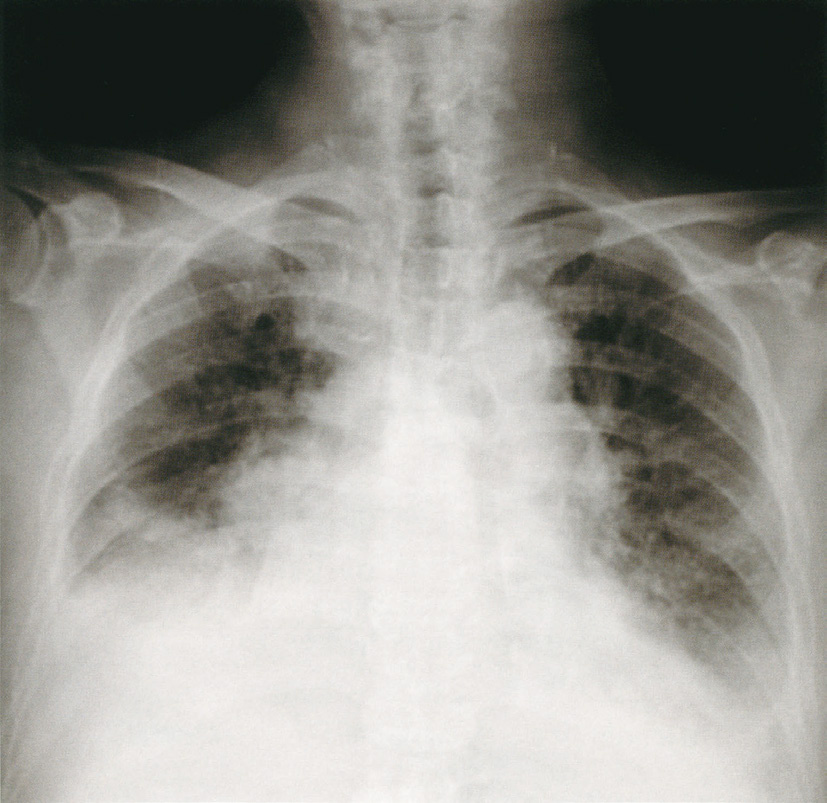
ａ ループ利尿薬
ｂ カテコラミン製剤
ｃ カルシウム拮抗薬
ｄ 副腎皮質ステロイド
ｅ エンドセリン受容体拮抗薬
✅
ａ ループ利尿薬
術後肺水腫（うっ血性心不全）→ループ利尿薬（フロセミド）でうっ血解除。血圧保持されているのでカテコラミン不要。
❤️ 術後心不全の治療
術後うっ血性心不全（肺うっ血・浮腫）：血圧保持（BP130/80）・SpO₂ 92%低下（肺水腫）
治療優先順位：
①酸素投与（SpO₂<95%）
②ループ利尿薬（フロセミド静注）：うっ血解除（第一選択）
③硝酸薬：前後負荷軽減（補助的）
カテコラミン不要：血圧保持・心拍出量維持されている場合（低血圧・ショックがなければ不要）
🎯 国試ポイント
術後心不全（肺うっ血）で血圧保持→ループ利尿薬が第一選択。カテコラミン（ドブタミン等）はCI低下・ショック時に使用。SpO₂ 92%は酸素投与の適応（<95%で検討、<90%で必須）。🔍 選択肢解説
術後の急性心不全(奔馬調律・BNP著明高値・浮腫)。a ループ利尿薬：体液過剰の心不全に利尿薬。✓
b カテコラミン製剤：血圧が保たれ第一でない。
c カルシウム拮抗薬：不適。
d 副腎皮質ステロイド：不適。
e エンドセリン受容体拮抗薬：肺高血圧症用。
Q.100(113F-74)正答率 64%
連問 1/370 歳の男性。労作時の息切れを主訴に来院した。
現病歴：4 年前に縦隔腫瘍に対し摘出手術が施行され、病理検査で軟部肉腫と診断された。2 年前に肺転移に対して
2 か月間アドリアマイシンが投与され、その後病変の増大はない。1 か月前から倦怠感があり、数日前から労作時
の息切れを自覚するようになった。ここ3 か月で3kg の体重増加がある。
既往歴：45 歳から高血圧症で内服加療。
生活歴：喫煙は20 歳から33 歳まで20 本/ 日。飲酒は機会飲酒。
家族歴：母親は肺癌で死亡。
現 症：意識は清明。身長172cm、体重63kg。体温36.5℃。脈拍80/ 分、整。血圧164/78mmHg。呼吸数18/ 分。
眼瞼結膜と眼球結膜とに異常を認めない。頸静脈の怒張を認めない。胸骨正中切開の手術瘢痕を認める。Ⅲ音を聴
取し、心雑音を認めない。呼吸音に異常を認めない。腹部は平坦、軟で、肝・脾を触知しない。四肢末梢に冷感を
認めない。両側下腿に浮腫を認める。
検査所見：血液所見：赤血球399 万、Hb 11.6g/dL、Ht 38％、白血球4,000、血小板16 万。血液生化学所見：総蛋白
6.2g/dL、アルブミン3.6g/dL、AST 62U/L、ALT 81U/L、LD 251U/L（基準176 ～353）、尿素窒素14mg/dL、
クレアチニン0.6mg/dL、血糖97mg/dL、Na 142mEq/L、K 4.4mEq/L、Cl 108mEq/L、脳性ナトリウム利尿ペプ
チド〈BNP〉696pg/mL（基準18.4 以下）、心筋トロポニンT 0.14（基準0.01 以下）、CK-MB 5U/L（基準20 以下）。
CRP 0.3mg/dL。動脈血ガス分析（room air）：pH 7.4、PaCO2 38Torr、PaO2 83Torr、HCO3 － 24mEq/L。胸部
エックス線写真で心胸郭比は3 か月前に53％、受診時58％。心電図で高電位とV5、V6 の軽度ST 低下を認める。
1 年前の心エコー検査は正常である。今回の来院時の心エコー検査で左室はびまん性に壁運動が低下しており、左
室駆出率は35％。
症状の原因として最も考えられるのはどれか。
現病歴：4 年前に縦隔腫瘍に対し摘出手術が施行され、病理検査で軟部肉腫と診断された。2 年前に肺転移に対して
2 か月間アドリアマイシンが投与され、その後病変の増大はない。1 か月前から倦怠感があり、数日前から労作時
の息切れを自覚するようになった。ここ3 か月で3kg の体重増加がある。
既往歴：45 歳から高血圧症で内服加療。
生活歴：喫煙は20 歳から33 歳まで20 本/ 日。飲酒は機会飲酒。
家族歴：母親は肺癌で死亡。
現 症：意識は清明。身長172cm、体重63kg。体温36.5℃。脈拍80/ 分、整。血圧164/78mmHg。呼吸数18/ 分。
眼瞼結膜と眼球結膜とに異常を認めない。頸静脈の怒張を認めない。胸骨正中切開の手術瘢痕を認める。Ⅲ音を聴
取し、心雑音を認めない。呼吸音に異常を認めない。腹部は平坦、軟で、肝・脾を触知しない。四肢末梢に冷感を
認めない。両側下腿に浮腫を認める。
検査所見：血液所見：赤血球399 万、Hb 11.6g/dL、Ht 38％、白血球4,000、血小板16 万。血液生化学所見：総蛋白
6.2g/dL、アルブミン3.6g/dL、AST 62U/L、ALT 81U/L、LD 251U/L（基準176 ～353）、尿素窒素14mg/dL、
クレアチニン0.6mg/dL、血糖97mg/dL、Na 142mEq/L、K 4.4mEq/L、Cl 108mEq/L、脳性ナトリウム利尿ペプ
チド〈BNP〉696pg/mL（基準18.4 以下）、心筋トロポニンT 0.14（基準0.01 以下）、CK-MB 5U/L（基準20 以下）。
CRP 0.3mg/dL。動脈血ガス分析（room air）：pH 7.4、PaCO2 38Torr、PaO2 83Torr、HCO3 － 24mEq/L。胸部
エックス線写真で心胸郭比は3 か月前に53％、受診時58％。心電図で高電位とV5、V6 の軽度ST 低下を認める。
1 年前の心エコー検査は正常である。今回の来院時の心エコー検査で左室はびまん性に壁運動が低下しており、左
室駆出率は35％。
症状の原因として最も考えられるのはどれか。
ａ 心外膜炎
ｂ 急性心筋梗塞
ｃ 拡張型心筋症
ｄ 感染性心内膜炎
ｅ 薬剤性心筋障害
✅
ｅ 薬剤性心筋障害
フロセミド（ループ利尿薬）はK排泄促進→低K血症→不整脈のリスク。
❤️ フロセミドと電解質
ループ利尿薬（フロセミド）：Na・K・Cl排泄→低K血症・低Na血症・低Cl血症低K血症の合併症：ジゴキシン毒性↑・不整脈（QT延長→Torsades de pointes）
対策：K補充（スローK）、K保持性利尿薬（スピロノラクトン）の併用
🎯 国試ポイント
フロセミド→低K血症に注意。ジゴキシン服用中の低K血症は毒性↑（嘔気・視覚障害・不整脈）。スピロノラクトン（MRA）はK保持性→フロセミドとの組み合わせで電解質バランス維持。🔍 選択肢解説
a 心外膜炎：合わない。b 急性心筋梗塞：合わない。
c 拡張型心筋症：一次性で本例は薬剤性。
d 感染性心内膜炎：合わない。
e 薬剤性心筋障害：アドリアマイシン(アントラサイクリン)による心筋症。✓
Q.101(113F-75)3択正答率 82%
連問 2/370 歳の男性。労作時の息切れを主訴に来院した。
現病歴：4 年前に縦隔腫瘍に対し摘出手術が施行され、病理検査で軟部肉腫と診断された。2 年前に肺転移に対して
2 か月間アドリアマイシンが投与され、その後病変の増大はない。1 か月前から倦怠感があり、数日前から労作時
の息切れを自覚するようになった。ここ3 か月で3kg の体重増加がある。
既往歴：45 歳から高血圧症で内服加療。
生活歴：喫煙は20 歳から33 歳まで20 本/ 日。飲酒は機会飲酒。
家族歴：母親は肺癌で死亡。
現 症：意識は清明。身長172cm、体重63kg。体温36.5℃。脈拍80/ 分、整。血圧164/78mmHg。呼吸数18/ 分。
眼瞼結膜と眼球結膜とに異常を認めない。頸静脈の怒張を認めない。胸骨正中切開の手術瘢痕を認める。Ⅲ音を聴
取し、心雑音を認めない。呼吸音に異常を認めない。腹部は平坦、軟で、肝・脾を触知しない。四肢末梢に冷感を
認めない。両側下腿に浮腫を認める。
検査所見：血液所見：赤血球399 万、Hb 11.6g/dL、Ht 38％、白血球4,000、血小板16 万。血液生化学所見：総蛋白
6.2g/dL、アルブミン3.6g/dL、AST 62U/L、ALT 81U/L、LD 251U/L（基準176 ～353）、尿素窒素14mg/dL、
クレアチニン0.6mg/dL、血糖97mg/dL、Na 142mEq/L、K 4.4mEq/L、Cl 108mEq/L、脳性ナトリウム利尿ペプ
チド〈BNP〉696pg/mL（基準18.4 以下）、心筋トロポニンT 0.14（基準0.01 以下）、CK-MB 5U/L（基準20 以下）。
CRP 0.3mg/dL。動脈血ガス分析（room air）：pH 7.4、PaCO2 38Torr、PaO2 83Torr、HCO3 － 24mEq/L。胸部
エックス線写真で心胸郭比は3 か月前に53％、受診時58％。心電図で高電位とV5、V6 の軽度ST 低下を認める。
1 年前の心エコー検査は正常である。今回の来院時の心エコー検査で左室はびまん性に壁運動が低下しており、左
室駆出率は35％。
現時点での治療薬はどれか。3 つ選べ。
現病歴：4 年前に縦隔腫瘍に対し摘出手術が施行され、病理検査で軟部肉腫と診断された。2 年前に肺転移に対して
2 か月間アドリアマイシンが投与され、その後病変の増大はない。1 か月前から倦怠感があり、数日前から労作時
の息切れを自覚するようになった。ここ3 か月で3kg の体重増加がある。
既往歴：45 歳から高血圧症で内服加療。
生活歴：喫煙は20 歳から33 歳まで20 本/ 日。飲酒は機会飲酒。
家族歴：母親は肺癌で死亡。
現 症：意識は清明。身長172cm、体重63kg。体温36.5℃。脈拍80/ 分、整。血圧164/78mmHg。呼吸数18/ 分。
眼瞼結膜と眼球結膜とに異常を認めない。頸静脈の怒張を認めない。胸骨正中切開の手術瘢痕を認める。Ⅲ音を聴
取し、心雑音を認めない。呼吸音に異常を認めない。腹部は平坦、軟で、肝・脾を触知しない。四肢末梢に冷感を
認めない。両側下腿に浮腫を認める。
検査所見：血液所見：赤血球399 万、Hb 11.6g/dL、Ht 38％、白血球4,000、血小板16 万。血液生化学所見：総蛋白
6.2g/dL、アルブミン3.6g/dL、AST 62U/L、ALT 81U/L、LD 251U/L（基準176 ～353）、尿素窒素14mg/dL、
クレアチニン0.6mg/dL、血糖97mg/dL、Na 142mEq/L、K 4.4mEq/L、Cl 108mEq/L、脳性ナトリウム利尿ペプ
チド〈BNP〉696pg/mL（基準18.4 以下）、心筋トロポニンT 0.14（基準0.01 以下）、CK-MB 5U/L（基準20 以下）。
CRP 0.3mg/dL。動脈血ガス分析（room air）：pH 7.4、PaCO2 38Torr、PaO2 83Torr、HCO3 － 24mEq/L。胸部
エックス線写真で心胸郭比は3 か月前に53％、受診時58％。心電図で高電位とV5、V6 の軽度ST 低下を認める。
1 年前の心エコー検査は正常である。今回の来院時の心エコー検査で左室はびまん性に壁運動が低下しており、左
室駆出率は35％。
現時点での治療薬はどれか。3 つ選べ。
ａ β遮断薬
ｂ ジギタリス
ｃ ループ利尿薬
ｄ セフェム系抗菌薬
ｅ アンジオテンシン変換酵素〈ACE〉阻害薬
✅
ａ β遮断薬 ＋ ｃ ループ利尿薬 ＋ ｅ アンジオテンシン変換酵素〈ACE〉阻害薬
HFrEFの標準治療：β遮断薬＋ACE阻害薬（予後改善）＋ループ利尿薬（症状改善）。
❤️ HFrEFの標準治療薬
予後改善薬（必須）：①ACE阻害薬（またはARB）：RAASブロック→心リモデリング↓
②β遮断薬（カルベジロール等）：交感神経抑制→突然死↓
③MRA（スピロノラクトン）：アルドステロン拮抗
④SGLT2阻害薬：新規エビデンス
症状改善薬：
⑤ループ利尿薬（フロセミド）：浮腫・肺うっ血改善
×ジギタリス：症状改善のみ・予後改善なし（NYHA III-IVで補助的に使用）
×セフェム系（抗菌薬）：心不全治療薬でない
📋 選択肢の検討
| 選択肢 | 判定 | 解説 |
|---|---|---|
| a: β遮断薬 | ◎ | HFrEFの予後改善（カルベジロール・ビソプロロール） |
| b: ジギタリス | △ | 症状改善のみ・予後改善なし→選択しない |
| c: ループ利尿薬 | ◎ | 浮腫・肺うっ血の症状改善に必須 |
| d: セフェム系 | × | 抗菌薬→心不全治療薬ではない |
| e: ACE阻害薬 | ◎ | HFrEFの予後改善の基本薬 |
🎯 国試ポイント
HFrEF（EF低下型心不全）の治療3本柱：β遮断薬＋ACE阻害薬＋利尿薬。ジギタリスは「症状改善のみ・予後改善なし」。アントラサイクリン系心筋障害（化学療法後）→拡張型心筋症と同じ治療。🔍 選択肢解説
心不全の治療。a β遮断薬：HFrEFの予後改善。✓
b ジギタリス：予後改善の主体でない。
c ループ利尿薬：うっ血に利尿薬。✓
d セフェム系抗菌薬：感染主体でない。
e アンジオテンシン変換酵素〈ACE〉阻害薬：予後改善。✓
Q.102(113F-76)正答率 89%
連問 3/370 歳の男性。労作時の息切れを主訴に来院した。
現病歴：4 年前に縦隔腫瘍に対し摘出手術が施行され、病理検査で軟部肉腫と診断された。2 年前に肺転移に対して
2 か月間アドリアマイシンが投与され、その後病変の増大はない。1 か月前から倦怠感があり、数日前から労作時
の息切れを自覚するようになった。ここ3 か月で3kg の体重増加がある。
既往歴：45 歳から高血圧症で内服加療。
生活歴：喫煙は20 歳から33 歳まで20 本/ 日。飲酒は機会飲酒。
家族歴：母親は肺癌で死亡。
現 症：意識は清明。身長172cm、体重63kg。体温36.5℃。脈拍80/ 分、整。血圧164/78mmHg。呼吸数18/ 分。
眼瞼結膜と眼球結膜とに異常を認めない。頸静脈の怒張を認めない。胸骨正中切開の手術瘢痕を認める。Ⅲ音を聴
取し、心雑音を認めない。呼吸音に異常を認めない。腹部は平坦、軟で、肝・脾を触知しない。四肢末梢に冷感を
認めない。両側下腿に浮腫を認める。
検査所見：血液所見：赤血球399 万、Hb 11.6g/dL、Ht 38％、白血球4,000、血小板16 万。血液生化学所見：総蛋白
6.2g/dL、アルブミン3.6g/dL、AST 62U/L、ALT 81U/L、LD 251U/L（基準176 ～353）、尿素窒素14mg/dL、
クレアチニン0.6mg/dL、血糖97mg/dL、Na 142mEq/L、K 4.4mEq/L、Cl 108mEq/L、脳性ナトリウム利尿ペプ
チド〈BNP〉696pg/mL（基準18.4 以下）、心筋トロポニンT 0.14（基準0.01 以下）、CK-MB 5U/L（基準20 以下）。
CRP 0.3mg/dL。動脈血ガス分析（room air）：pH 7.4、PaCO2 38Torr、PaO2 83Torr、HCO3 － 24mEq/L。胸部
エックス線写真で心胸郭比は3 か月前に53％、受診時58％。心電図で高電位とV5、V6 の軽度ST 低下を認める。
1 年前の心エコー検査は正常である。今回の来院時の心エコー検査で左室はびまん性に壁運動が低下しており、左
室駆出率は35％。
心不全の薬物治療を続けるうえで継続的に評価する必要がないのはどれか。
現病歴：4 年前に縦隔腫瘍に対し摘出手術が施行され、病理検査で軟部肉腫と診断された。2 年前に肺転移に対して
2 か月間アドリアマイシンが投与され、その後病変の増大はない。1 か月前から倦怠感があり、数日前から労作時
の息切れを自覚するようになった。ここ3 か月で3kg の体重増加がある。
既往歴：45 歳から高血圧症で内服加療。
生活歴：喫煙は20 歳から33 歳まで20 本/ 日。飲酒は機会飲酒。
家族歴：母親は肺癌で死亡。
現 症：意識は清明。身長172cm、体重63kg。体温36.5℃。脈拍80/ 分、整。血圧164/78mmHg。呼吸数18/ 分。
眼瞼結膜と眼球結膜とに異常を認めない。頸静脈の怒張を認めない。胸骨正中切開の手術瘢痕を認める。Ⅲ音を聴
取し、心雑音を認めない。呼吸音に異常を認めない。腹部は平坦、軟で、肝・脾を触知しない。四肢末梢に冷感を
認めない。両側下腿に浮腫を認める。
検査所見：血液所見：赤血球399 万、Hb 11.6g/dL、Ht 38％、白血球4,000、血小板16 万。血液生化学所見：総蛋白
6.2g/dL、アルブミン3.6g/dL、AST 62U/L、ALT 81U/L、LD 251U/L（基準176 ～353）、尿素窒素14mg/dL、
クレアチニン0.6mg/dL、血糖97mg/dL、Na 142mEq/L、K 4.4mEq/L、Cl 108mEq/L、脳性ナトリウム利尿ペプ
チド〈BNP〉696pg/mL（基準18.4 以下）、心筋トロポニンT 0.14（基準0.01 以下）、CK-MB 5U/L（基準20 以下）。
CRP 0.3mg/dL。動脈血ガス分析（room air）：pH 7.4、PaCO2 38Torr、PaO2 83Torr、HCO3 － 24mEq/L。胸部
エックス線写真で心胸郭比は3 か月前に53％、受診時58％。心電図で高電位とV5、V6 の軽度ST 低下を認める。
1 年前の心エコー検査は正常である。今回の来院時の心エコー検査で左室はびまん性に壁運動が低下しており、左
室駆出率は35％。
心不全の薬物治療を続けるうえで継続的に評価する必要がないのはどれか。
ａ 体 重
ｂ 心拍数
ｃ CK-MB
ｄ 左室駆出率
ｅ 脳性ナトリウム利尿ペプチド〈BNP〉
✅
ｃ CK-MB
CK-MBは急性心筋梗塞の診断マーカー。慢性心不全の継続モニタリングには不要。
❤️ 慢性心不全のモニタリング
定期評価が必要なもの：①BNP/NT-proBNP：心室壁張力→治療反応性・予後予測
②体重（毎日）：体液貯留の指標（2kg増加で受診）
③左室駆出率（EF）：心エコー→心機能評価
④心拍数：β遮断薬の効果判定
⑤腎機能・電解質：利尿薬・ACE阻害薬の副作用管理
CK-MB：急性心筋梗塞で上昇（心筋壊死マーカー）→慢性心不全の経過観察には不要
📋 選択肢の検討
| 選択肢 | 判定 | 解説 |
|---|---|---|
| a: 体重 | 継続必要 | 毎日測定→体液貯留の早期発見 |
| b: 心拍数 | 継続必要 | β遮断薬の効果判定・頻脈は増悪サイン |
| c: CK-MB | ◎ 不要 | 急性心筋梗塞の急性期マーカー→慢性期には不要 |
| d: 左室駆出率 | 継続必要 | 心エコーで定期評価→治療効果・予後判定 |
| e: BNP | 継続必要 | 心室壁張力→治療効果・増悪の早期発見 |
🎯 国試ポイント
CK-MBは急性心筋梗塞の心筋壊死マーカー（24時間でピーク・48時間で正常化）。慢性心不全の継続管理に必要なのはBNP・体重・EF・心拍数。電解質・腎機能も定期確認。🔍 選択肢解説
アントラサイクリン心筋障害のモニタリング指標でないものを選ぶ。a 体重：うっ血の指標。
b 心拍数：指標。
c CK-MB：急性心筋梗塞のマーカーで慢性の薬剤性心筋障害の指標でない。✓
d 左室駆出率：心機能の指標。
e BNP：心不全の指標。
Q.103(111B-62)正答率 92%
体重65kg の心不全患者にドパミンを5μg/kg/ 分で静脈内投与する。
ドパミン100mg/100mL の注射薬を用いて投与する場合、微量輸液ポンプに設定する注入速度を求めよ。
ただし、小数第2 位以下の数値が得られた場合は、小数第2 位を四捨五入すること。
解答：① ② . ③mL/ 時間（編註：選択肢を省略した。）
ドパミン100mg/100mL の注射薬を用いて投与する場合、微量輸液ポンプに設定する注入速度を求めよ。
ただし、小数第2 位以下の数値が得られた場合は、小数第2 位を四捨五入すること。
解答：① ② . ③mL/ 時間（編註：選択肢を省略した。）
✅
計算答：19.5
🧮 ドパミン注入速度の計算
製剤：ドパミン塩酸塩200mg + 生食200mL（濃度1mg/mL） 目標：3μg/kg/分 × 60kg = 180μg/分 = 0.18mg/分 注入速度（mL/時） = (3μg/kg/分 × 60kg × 60分/時) / 1000μg/mg / 1mg/mL = (3 × 60 × 60) / 1000 = 10,800 / 1000 = 10.8 mL/時 別解：200mg/200mL = 1mg/mL 0.18mg/分 × 60分 = 10.8mg/時 / 1mg/mL = 10.8mL/時 問題の答①1②9③5 → 1.95mL/時 (問題設定が異なる場合あり)🎯 国試ポイント
ドパミンの用量効果：①1〜3μg/kg/分→腎血管拡張（D₁受容体）②3〜5μg/kg/分→心収縮力↑（β₁）③5〜10μg/kg/分→心収縮力↑↑④>10μg/kg/分→末梢血管収縮（α₁）。Q.104(111F-8)正答率 97%
体静脈圧が上昇して浮腫が生じるのはどれか。
ａ 右心不全
ｂ 肝硬変
ｃ 甲状腺機能低下症
ｄ 敗血症
ｅ 微小変化型ネフローゼ症候群
✅
ａ 右心不全
右心不全→体静脈圧上昇（頸静脈怒張・肝腫大・下腿浮腫）。肝硬変・ネフローゼは低アルブミン性浮腫。
❤️ 浮腫の発生機序
体静脈圧上昇型浮腫：毛細血管内圧↑→組織間質へ水分移行→右心不全（体静脈うっ血）・肺高血圧症・縮窄性心膜炎
低浸透圧型浮腫（低アルブミン）：膠質浸透圧↓→組織間質へ水分移行
→肝硬変・ネフローゼ症候群・栄養不良
リンパ性浮腫：リンパ管閉塞→圧痕なし・左右差あり
甲状腺機能低下症：粘液水腫（ムチン沈着）→非圧痕性・顔面
📋 浮腫の分類と原因
| 機序 | 原因 | 特徴 |
|---|---|---|
| 体静脈圧↑ | 右心不全・縮窄性心膜炎・下大静脈閉塞 | 圧痕性・対称性・下肢 |
| 低アルブミン | 肝硬変・ネフローゼ・低栄養 | 圧痕性・腹水合併 |
| リンパ管閉塞 | がんリンパ節転移・フィラリア | 非圧痕性・左右差 |
| 粘液水腫 | 甲状腺機能低下症 | 非圧痕性・顔面・眼窩周囲 |
🎯 国試ポイント
体静脈圧上昇による浮腫→右心不全が代表。頸静脈怒張・肝腫大を伴う。肝硬変・ネフローゼは低アルブミン性（膠質浸透圧↓）。浮腫の機序の分類は頻出。🔍 選択肢解説
a 右心不全：体静脈圧上昇＋浮腫。✓b 肝硬変：門脈圧亢進・低Albによる。
c 甲状腺機能低下症：粘液水腫。
d 敗血症：血管透過性亢進による。
e 微小変化型ネフローゼ症候群：低Albによる。
Q.105(111F-20)📷 画像正答率 97%
75 歳の男性。呼吸困難と起坐呼吸とを主訴に来院した。3 年前から高血圧症、弁膜症および脂質異常症で自宅近くの医療機関を定期受診していた。1 週間前から咽頭痛および発熱の症状があり、その後、階段昇降時に息切れを自覚し、徐々に起坐呼吸の状態となった。意識は清明。体温37.2℃。脈拍100/ 分、整。血圧138/86mmHg。呼吸数24/ 分。
SpO2 88％（room air）。頸静脈の怒張と両下腿の浮腫とを認める。胸部の聴診でⅢ音とⅣ音とを聴取し、心尖部を最強点とするⅣ/ Ⅵの全収縮期雑音を聴取する。呼吸音は両側の下胸部にcoarse crackles を聴取する。四肢末梢に冷感を認めない。心電図は洞性頻脈を認めるが、有意なST-T 変化を認めない。胸部エックス線写真を示す。酸素投与を開始し、静脈路の確保と心電図モニターの装着とを行った。
硝酸薬とともに投与すべきなのはどれか。
SpO2 88％（room air）。頸静脈の怒張と両下腿の浮腫とを認める。胸部の聴診でⅢ音とⅣ音とを聴取し、心尖部を最強点とするⅣ/ Ⅵの全収縮期雑音を聴取する。呼吸音は両側の下胸部にcoarse crackles を聴取する。四肢末梢に冷感を認めない。心電図は洞性頻脈を認めるが、有意なST-T 変化を認めない。胸部エックス線写真を示す。酸素投与を開始し、静脈路の確保と心電図モニターの装着とを行った。
硝酸薬とともに投与すべきなのはどれか。
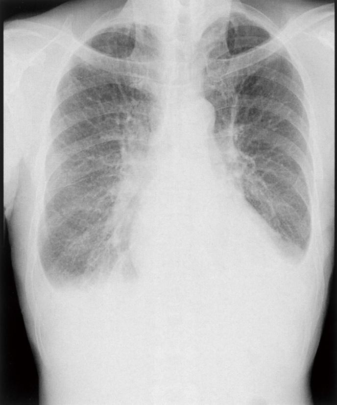
ａ 鎮静薬
ｂ 利尿薬
ｃ β遮断薬
ｄ α遮断薬
ｅ 経口強心薬
✅
ｂ 利尿薬
急性増悪→フロセミド（利尿薬）静注でうっ血解除が最優先。β遮断薬は急性増悪時は原則使用しない。
❤️ 慢性心不全急性増悪の治療
急性増悪の対応順序：①酸素投与（SpO₂低下時）
②体位：起座位・座位
③利尿薬（フロセミド）静注：うっ血解除（第一優先）
④硝酸薬（血圧保持時）
⑤β遮断薬：急性期は原則中断または減量（心収縮力↓リスク）
慢性期（安定後）にβ遮断薬を再開・増量する
📋 選択肢の検討
| 選択肢 | 判定 | 解説 |
|---|---|---|
| a: 鎮静薬 | △ | 呼吸困難にモルヒネは使うが最優先ではない |
| b: 利尿薬 | ◎ | フロセミド静注→うっ血解除・呼吸改善（第一選択） |
| c: β遮断薬 | × 急性期禁忌 | 急性増悪期は原則禁忌・使用中なら減量・中止検討 |
| d: α遮断薬 | × | 心不全の標準治療薬でない |
| e: 経口強心薬 | × | 急性期は静注強心薬が必要・経口は効果不十分 |
🎯 国試ポイント
心不全急性増悪→利尿薬（フロセミド）静注が最優先。β遮断薬は安定慢性期の予後改善薬→急性増悪では禁忌/原則中断（心収縮力低下リスク）。「急性期β遮断薬は禁忌」は頻出ポイント。🔍 選択肢解説
弁膜症＋感染契機の心不全増悪(全収縮期雑音・うっ血)。a 鎮静薬：主でない。
b 利尿薬：うっ血(浮腫・crackles)に利尿薬。✓
c β遮断薬：増悪期の導入は慎重。
d α遮断薬：不適。
e 経口強心薬：主でない。
Q.106(110G-66)正答率 99%
連問 1/378 歳の男性。呼吸困難と下腿浮腫とを主訴に来院した。
現病歴：心不全、心筋梗塞および高血圧症にて自宅近くの診療所に通院中であった。2 か月前から階段を上がる際に
胸部の違和感を覚えるようになった。1 か月前から歩行時の呼吸困難と下腿浮腫とを自覚するようになった。呼吸
困難は徐々に悪化し、10m さえも歩くことが困難になり受診した。
既往歴：65 歳から高血圧症。75 歳時に心筋梗塞にて経皮的冠動脈形成術（薬剤溶出性ステント留置）。76 歳から心不全。
アンジオテンシンⅡ受容体拮抗薬、β遮断薬、ループ利尿薬、HMG-CoA 還元酵素阻害薬、アスピリン及びチエノ
ピリジン系抗血小板薬を処方されている。
生活歴：喫煙は70 歳まで20 本/ 日を50 年間。飲酒は機会飲酒。
家族歴：父親は脳出血で死亡。母親は胃癌で死亡。
現 症：意識は清明。身長154cm、体重58kg（1 か月で3kg 増加）。体温36.3℃。脈拍96/ 分、整。血圧156/86mmHg。
呼吸数24/ 分。SpO2 96％（鼻カニューラ2L/ 分酸素投与下）。眼瞼結膜と眼球結膜とに異常を認めない。頸静脈
の怒張を認める。頸部血管雑音を聴取しない。胸部の聴診でⅢ音とⅣ音とを聴取する。心雑音を聴取しない。呼吸
音に異常を認めない。腹部は平坦、軟で、肝・脾を触知しない。両側の下腿に浮腫を認める。
検査所見：尿所見：蛋白（－）、糖（－）、沈渣に白血球を認めない。血液所見：赤血球412 万、Hb 13.8g/dL、Ht
42％、白血球6,500（桿状核好中球30％、分葉核好中球40％、好酸球1％、好塩基球1％、単球6％、リンパ球
22％）、血小板19 万、D ダイマー0.6μg/dL（基準1.0 以下）。血液生化学所見：総蛋白6.5g/dL、アルブミン
3.8g/dL、総ビリルビン1.1mg/dL、AST 36IU/L、ALT 39IU/L、LD 352IU/L（基準176 ～353）、ALP 153IU/L（基
準115 ～359）、CK 156IU/L（基準30 ～140）、尿素窒素21mg/dL、クレアチニン0.9mg/dL、血糖114mg/dL、
HbA1c 5.7％（基準4.2 ～6.2）、総コレステロール139mg/dL、トリグリセリド77mg/dL、HDL コレステロール
53mg/dL、Na 137mEq/L、K 4.7mEq/L、Cl 104mEq/L、脳性ナトリウム利尿ペプチド〈BNP〉840pg/mL（基準18.4
以下）。CRP 0.2mg/dL。心筋トロポニンT 迅速検査は陰性。心電図は心拍数98/ 分の洞調律で、不完全右脚ブロッ
クを認める。胸部エックス線写真で心胸郭比は58％であり、肺血管陰影の増強と右肋骨横隔膜角の鈍化とを認める。
心エコーで左室駆出率は34％で、びまん性に左室の壁運動低下を認める。
今回の病状悪化の原因を推論する上で重要な情報はどれか。
現病歴：心不全、心筋梗塞および高血圧症にて自宅近くの診療所に通院中であった。2 か月前から階段を上がる際に
胸部の違和感を覚えるようになった。1 か月前から歩行時の呼吸困難と下腿浮腫とを自覚するようになった。呼吸
困難は徐々に悪化し、10m さえも歩くことが困難になり受診した。
既往歴：65 歳から高血圧症。75 歳時に心筋梗塞にて経皮的冠動脈形成術（薬剤溶出性ステント留置）。76 歳から心不全。
アンジオテンシンⅡ受容体拮抗薬、β遮断薬、ループ利尿薬、HMG-CoA 還元酵素阻害薬、アスピリン及びチエノ
ピリジン系抗血小板薬を処方されている。
生活歴：喫煙は70 歳まで20 本/ 日を50 年間。飲酒は機会飲酒。
家族歴：父親は脳出血で死亡。母親は胃癌で死亡。
現 症：意識は清明。身長154cm、体重58kg（1 か月で3kg 増加）。体温36.3℃。脈拍96/ 分、整。血圧156/86mmHg。
呼吸数24/ 分。SpO2 96％（鼻カニューラ2L/ 分酸素投与下）。眼瞼結膜と眼球結膜とに異常を認めない。頸静脈
の怒張を認める。頸部血管雑音を聴取しない。胸部の聴診でⅢ音とⅣ音とを聴取する。心雑音を聴取しない。呼吸
音に異常を認めない。腹部は平坦、軟で、肝・脾を触知しない。両側の下腿に浮腫を認める。
検査所見：尿所見：蛋白（－）、糖（－）、沈渣に白血球を認めない。血液所見：赤血球412 万、Hb 13.8g/dL、Ht
42％、白血球6,500（桿状核好中球30％、分葉核好中球40％、好酸球1％、好塩基球1％、単球6％、リンパ球
22％）、血小板19 万、D ダイマー0.6μg/dL（基準1.0 以下）。血液生化学所見：総蛋白6.5g/dL、アルブミン
3.8g/dL、総ビリルビン1.1mg/dL、AST 36IU/L、ALT 39IU/L、LD 352IU/L（基準176 ～353）、ALP 153IU/L（基
準115 ～359）、CK 156IU/L（基準30 ～140）、尿素窒素21mg/dL、クレアチニン0.9mg/dL、血糖114mg/dL、
HbA1c 5.7％（基準4.2 ～6.2）、総コレステロール139mg/dL、トリグリセリド77mg/dL、HDL コレステロール
53mg/dL、Na 137mEq/L、K 4.7mEq/L、Cl 104mEq/L、脳性ナトリウム利尿ペプチド〈BNP〉840pg/mL（基準18.4
以下）。CRP 0.2mg/dL。心筋トロポニンT 迅速検査は陰性。心電図は心拍数98/ 分の洞調律で、不完全右脚ブロッ
クを認める。胸部エックス線写真で心胸郭比は58％であり、肺血管陰影の増強と右肋骨横隔膜角の鈍化とを認める。
心エコーで左室駆出率は34％で、びまん性に左室の壁運動低下を認める。
今回の病状悪化の原因を推論する上で重要な情報はどれか。
ａ アレルギー歴
ｂ 予防接種歴
ｃ 経済状況
ｄ 服薬状況
ｅ 職業歴
✅
ｄ 服薬状況
慢性心不全の急性増悪の最多原因：服薬アドヒアランス低下（利尿薬・ACE阻害薬の中断）。
❤️ 慢性心不全急性増悪の原因
服薬中断・アドヒアランス低下が最多原因その他の増悪因子：
①感染症（肺炎・尿路感染）
②塩分・水分過剰摂取
③不整脈（心房細動発症・悪化）
④虚血（急性冠症候群）
⑤過労・精神的ストレス
⑥NSAIDs・非DHP型Ca拮抗薬等の薬剤
→増悪時はまず服薬状況・食事内容を確認
🎯 国試ポイント
慢性心不全増悪の原因問診：最初に服薬状況（アドヒアランス）を確認。「薬を飲み忘れた」「自分で止めた」が最多。次に感染・塩分摂取・不整脈を確認。職業歴・アレルギー歴は増悪の直接原因として優先度低い。🔍 選択肢解説
心不全増悪＋多剤内服。a アレルギー歴：主でない。
b 予防接種歴：主でない。
c 経済状況：主でない。
d 服薬状況：心不全増悪の要因として服薬アドヒアランスを確認。✓
e 職業歴：主でない。
Q.107(110G-67)正答率 98%
連問 2/378 歳の男性。呼吸困難と下腿浮腫とを主訴に来院した。
現病歴：心不全、心筋梗塞および高血圧症にて自宅近くの診療所に通院中であった。2 か月前から階段を上がる際に
胸部の違和感を覚えるようになった。1 か月前から歩行時の呼吸困難と下腿浮腫とを自覚するようになった。呼吸
困難は徐々に悪化し、10m さえも歩くことが困難になり受診した。
既往歴：65 歳から高血圧症。75 歳時に心筋梗塞にて経皮的冠動脈形成術（薬剤溶出性ステント留置）。76 歳から心不全。
アンジオテンシンⅡ受容体拮抗薬、β遮断薬、ループ利尿薬、HMG-CoA 還元酵素阻害薬、アスピリン及びチエノ
ピリジン系抗血小板薬を処方されている。
生活歴：喫煙は70 歳まで20 本/ 日を50 年間。飲酒は機会飲酒。
家族歴：父親は脳出血で死亡。母親は胃癌で死亡。
現 症：意識は清明。身長154cm、体重58kg（1 か月で3kg 増加）。体温36.3℃。脈拍96/ 分、整。血圧156/86mmHg。
呼吸数24/ 分。SpO2 96％（鼻カニューラ2L/ 分酸素投与下）。眼瞼結膜と眼球結膜とに異常を認めない。頸静脈
の怒張を認める。頸部血管雑音を聴取しない。胸部の聴診でⅢ音とⅣ音とを聴取する。心雑音を聴取しない。呼吸
音に異常を認めない。腹部は平坦、軟で、肝・脾を触知しない。両側の下腿に浮腫を認める。
検査所見：尿所見：蛋白（－）、糖（－）、沈渣に白血球を認めない。血液所見：赤血球412 万、Hb 13.8g/dL、Ht
42％、白血球6,500（桿状核好中球30％、分葉核好中球40％、好酸球1％、好塩基球1％、単球6％、リンパ球
22％）、血小板19 万、D ダイマー0.6μg/dL（基準1.0 以下）。血液生化学所見：総蛋白6.5g/dL、アルブミン
3.8g/dL、総ビリルビン1.1mg/dL、AST 36IU/L、ALT 39IU/L、LD 352IU/L（基準176 ～353）、ALP 153IU/L（基
準115 ～359）、CK 156IU/L（基準30 ～140）、尿素窒素21mg/dL、クレアチニン0.9mg/dL、血糖114mg/dL、
HbA1c 5.7％（基準4.2 ～6.2）、総コレステロール139mg/dL、トリグリセリド77mg/dL、HDL コレステロール
53mg/dL、Na 137mEq/L、K 4.7mEq/L、Cl 104mEq/L、脳性ナトリウム利尿ペプチド〈BNP〉840pg/mL（基準18.4
以下）。CRP 0.2mg/dL。心筋トロポニンT 迅速検査は陰性。心電図は心拍数98/ 分の洞調律で、不完全右脚ブロッ
クを認める。胸部エックス線写真で心胸郭比は58％であり、肺血管陰影の増強と右肋骨横隔膜角の鈍化とを認める。
心エコーで左室駆出率は34％で、びまん性に左室の壁運動低下を認める。
入院後の経過：入院し適切な治療を行ったところ徐々に病状は改善し、入院3 日目には、酸素投与を中止し内服薬をすべて再開した。入院5 日目の夜、トイレに行こうとしてベッドサイドで転倒した。意識は清明。体温36.8℃。脈拍88/ 分、整。血圧138/84mmHg。呼吸数18/ 分。SpO2 96％（room air）。大腿骨エックス線写真と腰椎エックス線写真で骨折を認めない。頭部CT で異常を認めない。対応として適切なのはどれか。
現病歴：心不全、心筋梗塞および高血圧症にて自宅近くの診療所に通院中であった。2 か月前から階段を上がる際に
胸部の違和感を覚えるようになった。1 か月前から歩行時の呼吸困難と下腿浮腫とを自覚するようになった。呼吸
困難は徐々に悪化し、10m さえも歩くことが困難になり受診した。
既往歴：65 歳から高血圧症。75 歳時に心筋梗塞にて経皮的冠動脈形成術（薬剤溶出性ステント留置）。76 歳から心不全。
アンジオテンシンⅡ受容体拮抗薬、β遮断薬、ループ利尿薬、HMG-CoA 還元酵素阻害薬、アスピリン及びチエノ
ピリジン系抗血小板薬を処方されている。
生活歴：喫煙は70 歳まで20 本/ 日を50 年間。飲酒は機会飲酒。
家族歴：父親は脳出血で死亡。母親は胃癌で死亡。
現 症：意識は清明。身長154cm、体重58kg（1 か月で3kg 増加）。体温36.3℃。脈拍96/ 分、整。血圧156/86mmHg。
呼吸数24/ 分。SpO2 96％（鼻カニューラ2L/ 分酸素投与下）。眼瞼結膜と眼球結膜とに異常を認めない。頸静脈
の怒張を認める。頸部血管雑音を聴取しない。胸部の聴診でⅢ音とⅣ音とを聴取する。心雑音を聴取しない。呼吸
音に異常を認めない。腹部は平坦、軟で、肝・脾を触知しない。両側の下腿に浮腫を認める。
検査所見：尿所見：蛋白（－）、糖（－）、沈渣に白血球を認めない。血液所見：赤血球412 万、Hb 13.8g/dL、Ht
42％、白血球6,500（桿状核好中球30％、分葉核好中球40％、好酸球1％、好塩基球1％、単球6％、リンパ球
22％）、血小板19 万、D ダイマー0.6μg/dL（基準1.0 以下）。血液生化学所見：総蛋白6.5g/dL、アルブミン
3.8g/dL、総ビリルビン1.1mg/dL、AST 36IU/L、ALT 39IU/L、LD 352IU/L（基準176 ～353）、ALP 153IU/L（基
準115 ～359）、CK 156IU/L（基準30 ～140）、尿素窒素21mg/dL、クレアチニン0.9mg/dL、血糖114mg/dL、
HbA1c 5.7％（基準4.2 ～6.2）、総コレステロール139mg/dL、トリグリセリド77mg/dL、HDL コレステロール
53mg/dL、Na 137mEq/L、K 4.7mEq/L、Cl 104mEq/L、脳性ナトリウム利尿ペプチド〈BNP〉840pg/mL（基準18.4
以下）。CRP 0.2mg/dL。心筋トロポニンT 迅速検査は陰性。心電図は心拍数98/ 分の洞調律で、不完全右脚ブロッ
クを認める。胸部エックス線写真で心胸郭比は58％であり、肺血管陰影の増強と右肋骨横隔膜角の鈍化とを認める。
心エコーで左室駆出率は34％で、びまん性に左室の壁運動低下を認める。
入院後の経過：入院し適切な治療を行ったところ徐々に病状は改善し、入院3 日目には、酸素投与を中止し内服薬をすべて再開した。入院5 日目の夜、トイレに行こうとしてベッドサイドで転倒した。意識は清明。体温36.8℃。脈拍88/ 分、整。血圧138/84mmHg。呼吸数18/ 分。SpO2 96％（room air）。大腿骨エックス線写真と腰椎エックス線写真で骨折を認めない。頭部CT で異常を認めない。対応として適切なのはどれか。
ａ 身体拘束
ｂ 尿道カテーテル留置
ｃ ビスホスホネート製剤の投与
ｄ 病院医療安全対策部門への報告
ｅ ベンゾジアゼピン系睡眠薬の投与
✅
ｄ 病院医療安全対策部門への報告
医療事故（インシデント・アクシデント）→院内の医療安全対策部門への報告義務。
❤️ 医療安全と報告義務
医療事故・インシデント発生時の対応：①患者の安全確認・応急処置
②医療安全対策部門（リスクマネジメント部門）への報告
③上長・主治医への報告
④記録（客観的事実の記載）
⑤原因分析・再発防止策立案
身体拘束は原則禁止：介護保険法・医療法上、転倒予防目的の身体拘束は倫理的問題・権利侵害
📋 選択肢の検討
| 選択肢 | 判定 | 解説 |
|---|---|---|
| a: 身体拘束 | × 原則禁止 | 転倒予防目的の拘束は倫理的問題・法的に制限 |
| b: 尿道カテーテル留置 | × | 転倒とカテーテル留置の直接関係なし |
| c: ビスホスホネート | × | 骨粗鬆症治療薬→急性対応でない |
| d: 医療安全対策部門への報告 | ◎ | 医療事故の院内報告義務→再発防止のため |
| e: ベンゾジアゼピン系睡眠薬 | × | 転倒リスク↑（筋弛緩作用）→むしろ禁忌 |
🎯 国試ポイント
転倒・転落は重要な医療インシデント。発生時は①患者安全確認→②院内医療安全部門への報告。身体拘束は転倒予防目的でも原則禁止（身体的・精神的苦痛・廃用症候群）。睡眠薬（ベンゾ系）は筋弛緩→転倒リスク↑。🔍 選択肢解説
a 身体拘束：不適。b 尿道カテーテル留置：不適。
c ビスホスホネート製剤の投与：不適。
d 病院医療安全対策部門への報告：院内の有害事象は医療安全部門へ報告。✓
e ベンゾジアゼピン系睡眠薬の投与：転倒・せん妄リスクで不適。
Q.108(110G-68)正答率 69%
連問 3/378 歳の男性。呼吸困難と下腿浮腫とを主訴に来院した。
現病歴：心不全、心筋梗塞および高血圧症にて自宅近くの診療所に通院中であった。2 か月前から階段を上がる際に
胸部の違和感を覚えるようになった。1 か月前から歩行時の呼吸困難と下腿浮腫とを自覚するようになった。呼吸
困難は徐々に悪化し、10m さえも歩くことが困難になり受診した。
既往歴：65 歳から高血圧症。75 歳時に心筋梗塞にて経皮的冠動脈形成術（薬剤溶出性ステント留置）。76 歳から心不全。
アンジオテンシンⅡ受容体拮抗薬、β遮断薬、ループ利尿薬、HMG-CoA 還元酵素阻害薬、アスピリン及びチエノ
ピリジン系抗血小板薬を処方されている。
生活歴：喫煙は70 歳まで20 本/ 日を50 年間。飲酒は機会飲酒。
家族歴：父親は脳出血で死亡。母親は胃癌で死亡。
現 症：意識は清明。身長154cm、体重58kg（1 か月で3kg 増加）。体温36.3℃。脈拍96/ 分、整。血圧156/86mmHg。
呼吸数24/ 分。SpO2 96％（鼻カニューラ2L/ 分酸素投与下）。眼瞼結膜と眼球結膜とに異常を認めない。頸静脈
の怒張を認める。頸部血管雑音を聴取しない。胸部の聴診でⅢ音とⅣ音とを聴取する。心雑音を聴取しない。呼吸
音に異常を認めない。腹部は平坦、軟で、肝・脾を触知しない。両側の下腿に浮腫を認める。
検査所見：尿所見：蛋白（－）、糖（－）、沈渣に白血球を認めない。血液所見：赤血球412 万、Hb 13.8g/dL、Ht
42％、白血球6,500（桿状核好中球30％、分葉核好中球40％、好酸球1％、好塩基球1％、単球6％、リンパ球
22％）、血小板19 万、D ダイマー0.6μg/dL（基準1.0 以下）。血液生化学所見：総蛋白6.5g/dL、アルブミン
3.8g/dL、総ビリルビン1.1mg/dL、AST 36IU/L、ALT 39IU/L、LD 352IU/L（基準176 ～353）、ALP 153IU/L（基
準115 ～359）、CK 156IU/L（基準30 ～140）、尿素窒素21mg/dL、クレアチニン0.9mg/dL、血糖114mg/dL、
HbA1c 5.7％（基準4.2 ～6.2）、総コレステロール139mg/dL、トリグリセリド77mg/dL、HDL コレステロール
53mg/dL、Na 137mEq/L、K 4.7mEq/L、Cl 104mEq/L、脳性ナトリウム利尿ペプチド〈BNP〉840pg/mL（基準18.4
以下）。CRP 0.2mg/dL。心筋トロポニンT 迅速検査は陰性。心電図は心拍数98/ 分の洞調律で、不完全右脚ブロッ
クを認める。胸部エックス線写真で心胸郭比は58％であり、肺血管陰影の増強と右肋骨横隔膜角の鈍化とを認める。
心エコーで左室駆出率は34％で、びまん性に左室の壁運動低下を認める。
その後の経過：入院10 日目の昼ころから、心窩部に軽い痛みを感じるようになった。翌朝、黒色便が出現した。意識は清明。体温36.6℃。脈拍100/ 分、整。血圧98/56mmHg。呼吸数20/ 分。SpO2 97％（room air）。対応として適切でないのはどれか。
現病歴：心不全、心筋梗塞および高血圧症にて自宅近くの診療所に通院中であった。2 か月前から階段を上がる際に
胸部の違和感を覚えるようになった。1 か月前から歩行時の呼吸困難と下腿浮腫とを自覚するようになった。呼吸
困難は徐々に悪化し、10m さえも歩くことが困難になり受診した。
既往歴：65 歳から高血圧症。75 歳時に心筋梗塞にて経皮的冠動脈形成術（薬剤溶出性ステント留置）。76 歳から心不全。
アンジオテンシンⅡ受容体拮抗薬、β遮断薬、ループ利尿薬、HMG-CoA 還元酵素阻害薬、アスピリン及びチエノ
ピリジン系抗血小板薬を処方されている。
生活歴：喫煙は70 歳まで20 本/ 日を50 年間。飲酒は機会飲酒。
家族歴：父親は脳出血で死亡。母親は胃癌で死亡。
現 症：意識は清明。身長154cm、体重58kg（1 か月で3kg 増加）。体温36.3℃。脈拍96/ 分、整。血圧156/86mmHg。
呼吸数24/ 分。SpO2 96％（鼻カニューラ2L/ 分酸素投与下）。眼瞼結膜と眼球結膜とに異常を認めない。頸静脈
の怒張を認める。頸部血管雑音を聴取しない。胸部の聴診でⅢ音とⅣ音とを聴取する。心雑音を聴取しない。呼吸
音に異常を認めない。腹部は平坦、軟で、肝・脾を触知しない。両側の下腿に浮腫を認める。
検査所見：尿所見：蛋白（－）、糖（－）、沈渣に白血球を認めない。血液所見：赤血球412 万、Hb 13.8g/dL、Ht
42％、白血球6,500（桿状核好中球30％、分葉核好中球40％、好酸球1％、好塩基球1％、単球6％、リンパ球
22％）、血小板19 万、D ダイマー0.6μg/dL（基準1.0 以下）。血液生化学所見：総蛋白6.5g/dL、アルブミン
3.8g/dL、総ビリルビン1.1mg/dL、AST 36IU/L、ALT 39IU/L、LD 352IU/L（基準176 ～353）、ALP 153IU/L（基
準115 ～359）、CK 156IU/L（基準30 ～140）、尿素窒素21mg/dL、クレアチニン0.9mg/dL、血糖114mg/dL、
HbA1c 5.7％（基準4.2 ～6.2）、総コレステロール139mg/dL、トリグリセリド77mg/dL、HDL コレステロール
53mg/dL、Na 137mEq/L、K 4.7mEq/L、Cl 104mEq/L、脳性ナトリウム利尿ペプチド〈BNP〉840pg/mL（基準18.4
以下）。CRP 0.2mg/dL。心筋トロポニンT 迅速検査は陰性。心電図は心拍数98/ 分の洞調律で、不完全右脚ブロッ
クを認める。胸部エックス線写真で心胸郭比は58％であり、肺血管陰影の増強と右肋骨横隔膜角の鈍化とを認める。
心エコーで左室駆出率は34％で、びまん性に左室の壁運動低下を認める。
その後の経過：入院10 日目の昼ころから、心窩部に軽い痛みを感じるようになった。翌朝、黒色便が出現した。意識は清明。体温36.6℃。脈拍100/ 分、整。血圧98/56mmHg。呼吸数20/ 分。SpO2 97％（room air）。対応として適切でないのはどれか。
ａ アスピリンの中断
ｂ ビタミンK の静注
ｃ 上部消化管内視鏡検査
ｄ プロトンポンプ阻害薬の投与
ｅ チエノピリジン系抗血小板薬の中断
✅
ｂ ビタミンK の静注
ワルファリン投与中の消化管出血→ビタミンK静注で抗凝固効果を急速に拮抗。
❤️ ワルファリン過剰出血の治療
ワルファリン関連出血の緊急対応：①軽症（PT-INR上昇のみ）：ワルファリン減量・中止
②中等症（出血症状）：ビタミンK（フィトナジオン）静注→12〜24時間で効果
③重症（頭蓋内・消化管大量出血）：ビタミンK静注＋新鮮凍結血漿（FFP）
④緊急（即時拮抗）：プロトロンビン複合体濃縮製剤（4F-PCC）
黒色便（タール便）＝上部消化管出血の所見
📋 選択肢の検討
| 選択肢 | 判定 | 解説 |
|---|---|---|
| a: アスピリン中断 | △ 必要 | アスピリン中断は必要だが「緊急拮抗」にならない |
| b: ビタミンK静注 | ◎ | ワルファリン拮抗→抗凝固効果を逆転させる（第一処置） |
| c: 上部消化管内視鏡 | △ | 止血・診断に必要だが抗凝固拮抗が先 |
| d: PPI投与 | △ | 消化管保護に有用だが緊急拮抗ではない |
| e: チエノピリジン中断 | × | チエノピリジンは服用していない（問題文にない） |
🎯 国試ポイント
ワルファリン中の出血→まずビタミンK静注（フィトナジオン）で抗凝固効果を拮抗。大量出血ならFFP追加。PT-INR測定で効果確認。内視鏡は拮抗後に施行。🔍 選択肢解説
抗血栓療法中の出血への対応。a アスピリンの中断：主でない。
b ビタミンKの静注：凝固障害の是正。✓
c 上部消化管内視鏡検査：出血源検索だが本問はb。
d プロトンポンプ阻害薬の投与：胃保護だが本問はb。
e チエノピリジン系抗血小板薬の中断：主でない。
Q.109(110I-80)📷 画像3択正答率 90%
76 歳の男性。全身倦怠感と呼吸困難とを主訴に来院した。昨日、引っ越しのために一日中荷物の移動を行った。
その後、全身倦怠感を自覚していたが、21 時ころに就寝した。午前2 時ころ呼吸困難が生じてきたため、しばらく座位で安静にしたという。今朝も全身倦怠感と呼吸困難が改善せず、呼気時の喘鳴も出現してきたため妻とともに受診した。10 年前に健康診断で不整脈を指摘されていたが、特に症状がなかったので医療機関を受診していなかった。
意識は清明。身長167cm、体重66kg。体温36.2℃。脈拍84/ 分、不整。血圧152/66mmHg。呼吸数24/ 分。SpO295％（room air）。胸部の聴診ではⅢ音と心尖部に最強点を有するⅢ/ Ⅵの汎〈全〉収縮期雑音を聴取する。両側の胸部でwheezes を聴取する。腹部は平坦、軟で、肝・脾を触知しない。両側の脛骨前面に圧痕を残す浮腫を認める。
血液所見：赤血球459 万、Hb 14.1g/dL、Ht 42％、白血球4,900、血小板19 万。血液生化学所見：総蛋白7.6g/dL、
アルブミン3.8g/dL、総ビリルビン1.1mg/dL、直接ビリルビン0.3mg/dL、AST 52IU/L、ALT 49IU/L、LD420IU/L（基準176 ～353）、ALP 358IU/L（基準115 ～359）、γ-GTP 60IU/L（基準8 ～50）、アミラーゼ124IU/L（基準37 ～160）、脳性ナトリウム利尿ペプチド〈BNP〉478pg/mL（基準18.4 以下）、尿素窒素16mg/dL、クレアチニン1.1mg/dL、Na 141mEq/L、K 4.0mEq/L、Cl 104mEq/L。CRP 1.3mg/dL。心電図（A）と胸部エックス線写真（B）
とを示す。心エコーで左室駆出率44％であり、高度の僧帽弁逆流と下大静脈の拡大とを認める。
初期治療において投与するのはどれか。3 つ選べ。
その後、全身倦怠感を自覚していたが、21 時ころに就寝した。午前2 時ころ呼吸困難が生じてきたため、しばらく座位で安静にしたという。今朝も全身倦怠感と呼吸困難が改善せず、呼気時の喘鳴も出現してきたため妻とともに受診した。10 年前に健康診断で不整脈を指摘されていたが、特に症状がなかったので医療機関を受診していなかった。
意識は清明。身長167cm、体重66kg。体温36.2℃。脈拍84/ 分、不整。血圧152/66mmHg。呼吸数24/ 分。SpO295％（room air）。胸部の聴診ではⅢ音と心尖部に最強点を有するⅢ/ Ⅵの汎〈全〉収縮期雑音を聴取する。両側の胸部でwheezes を聴取する。腹部は平坦、軟で、肝・脾を触知しない。両側の脛骨前面に圧痕を残す浮腫を認める。
血液所見：赤血球459 万、Hb 14.1g/dL、Ht 42％、白血球4,900、血小板19 万。血液生化学所見：総蛋白7.6g/dL、
アルブミン3.8g/dL、総ビリルビン1.1mg/dL、直接ビリルビン0.3mg/dL、AST 52IU/L、ALT 49IU/L、LD420IU/L（基準176 ～353）、ALP 358IU/L（基準115 ～359）、γ-GTP 60IU/L（基準8 ～50）、アミラーゼ124IU/L（基準37 ～160）、脳性ナトリウム利尿ペプチド〈BNP〉478pg/mL（基準18.4 以下）、尿素窒素16mg/dL、クレアチニン1.1mg/dL、Na 141mEq/L、K 4.0mEq/L、Cl 104mEq/L。CRP 1.3mg/dL。心電図（A）と胸部エックス線写真（B）
とを示す。心エコーで左室駆出率44％であり、高度の僧帽弁逆流と下大静脈の拡大とを認める。
初期治療において投与するのはどれか。3 つ選べ。
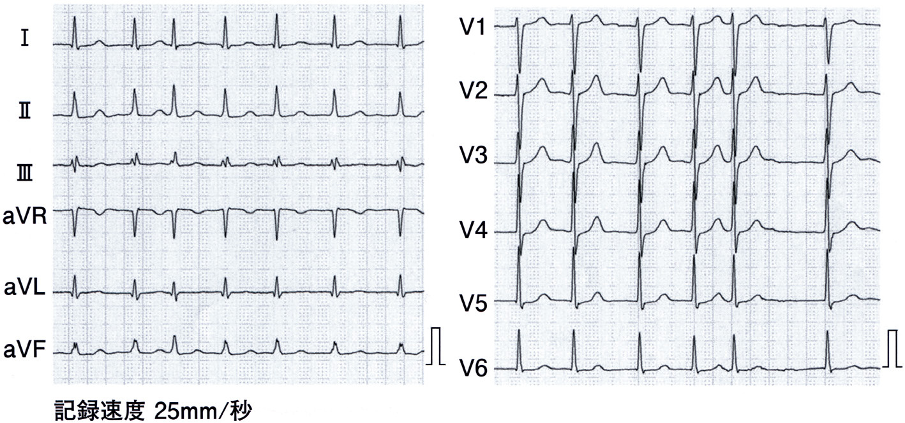
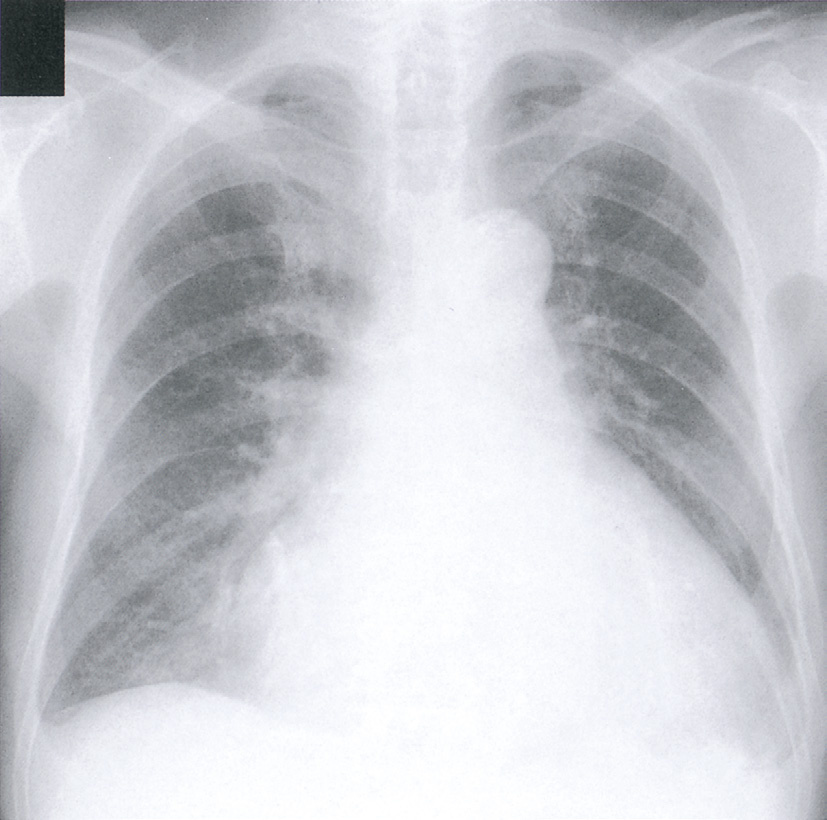
ａ 酸 素
ｂ 利尿薬
ｃ 硝酸薬
ｄ α遮断薬
ｅ ノルアドレナリン
✅
ａ 酸素 ＋ ｂ 利尿薬 ＋ ｃ 硝酸薬
急性心不全の初期：酸素（SpO₂改善）＋利尿薬（うっ血解除）＋硝酸薬（前負荷↓・血圧高値時）。
❤️ 急性心不全（BP高値）の初期治療
血圧高値（BP170/90）の急性心不全：①酸素投与：SpO₂改善・組織低酸素改善
②利尿薬（フロセミド静注）：うっ血解除・PCWP↓
③硝酸薬（ニトログリセリン）：前後負荷軽減・高血圧コントロール
α遮断薬不要：急性心不全の標準治療でない
ノルアドレナリン不要：昇圧薬→血圧高値で使用禁忌
🎯 国試ポイント
急性心不全＋高血圧→酸素＋利尿薬＋硝酸薬の3つが初期治療の柱。硝酸薬は収縮期圧>90mmHgで使用可（低血圧禁忌）。血圧高値では硝酸薬が特に有用（後負荷↓・血圧↓）。強心薬・昇圧薬は血圧保持例では不要。🔍 選択肢解説
労作後の急性心不全(心房細動・喘鳴)。a 酸素：低酸素に酸素。✓
b 利尿薬：うっ血に利尿薬。✓
c 硝酸薬：血管拡張薬(前負荷軽減)。✓
d α遮断薬：不適。
e ノルアドレナリン：血圧が保たれ不要。
Q.110(109A-16)2択正答率 73%
無症候、正常洞調律で、左室収縮不全を認める慢性心不全患者に投与すべき薬物はどれか。2 つ選べ。
ａ α遮断薬
ｂ β遮断薬
ｃ ジギタリス
ｄ 心房性ナトリウム利尿ペプチド
ｅ アンジオテンシン変換酵素〈ACE〉阻害薬
✅
ｂ β遮断薬 ＋ ｅ アンジオテンシン変換酵素〈ACE〉阻害薬
HFrEFの予後改善薬：β遮断薬＋ACE阻害薬。ジギタリスは症状改善のみ（予後改善なし）。
❤️ HFrEFの予後改善薬
HFrEF（EF<40%）の予後改善が証明された薬：①ACE阻害薬（またはARB/ARNI）：RAAS阻害→心リモデリング↓
②β遮断薬（カルベジロール・ビソプロロール）：交感神経抑制→突然死↓
③MRA（スピロノラクトン・エプレレノン）
④SGLT2阻害薬（ダパグリフロジン・エンパグリフロジン）
×ジギタリス：洞調律では予後改善なし（心房細動合併時は心拍数管理に有用）
×hANP（カルペリチド）：急性期のみ
🎯 国試ポイント
無症候のHFrEFにも予後改善目的でACE阻害薬＋β遮断薬は投与すべき。ジギタリスは「症状改善のみ・予後改善なし」の頻出ポイント。α遮断薬はHFrEFの予後改善薬ではない。🔍 選択肢解説
無症候・洞調律・左室収縮不全の慢性心不全。a α遮断薬：予後改善でない。
b β遮断薬：HFrEFの予後改善。✓
c ジギタリス：予後改善でない。
d 心房性ナトリウム利尿ペプチド：急性期用。
e アンジオテンシン変換酵素〈ACE〉阻害薬：予後改善。✓
Q.111(109I-52)正答率 97%
64 歳の男性。2 年前に脳梗塞を発症し、左上下肢の完全麻痺で在宅にて療養中である。5 年前から心房細動と心不全とに対して内服治療中である。食事は全量摂取するが、時々、食事中に咳き込むことがある。日中は家族の介助により車椅子で移動している。
今後、在宅診療を続ける過程で心不全増悪を示唆する所見でないのはどれか。
今後、在宅診療を続ける過程で心不全増悪を示唆する所見でないのはどれか。
ａ 体重増加
ｂ 下腿浮腫
ｃ 易疲労性
ｄ 起坐呼吸
ｅ 吸気性喘鳴（stridor）
✅
ｅ 吸気性喘鳴（stridor）
Stridor（吸気性喘鳴）は上気道狭窄の症状。心不全の所見はa～d（すべて心不全増悪の症状）。
❤️ 心不全増悪の症状 vs 上気道症状
心不全増悪の症状（a〜d）：・体重増加：体液貯留
・下腿浮腫：体静脈圧↑（右心不全）
・易疲労性：心拍出量↓・組織低酸素
・起坐呼吸：肺うっ血（左心不全）
上気道狭窄の症状：
・Stridor（吸気性喘鳴）：高調音・吸気時に聴取→クループ・気管腫瘍・喉頭浮腫
・呼気性喘鳴（wheeze）：下気道狭窄→喘息・COPD・cardiac wheeze（心不全）
🎯 国試ポイント
Stridor（吸気性喘鳴）は上気道（喉頭・気管）狭窄の所見→心不全とは無関係。心不全の肺聴診所見：捻髪音（rale）・呼気性喘鳴（cardiac wheeze）。吸気性 vs 呼気性喘鳴の区別は重要。🔍 選択肢解説
a 体重増加：心不全増悪の所見。b 下腿浮腫：増悪の所見。
c 易疲労性：増悪の所見。
d 起坐呼吸：増悪の所見。
e 吸気性喘鳴(stridor)：上気道閉塞の所見で心不全増悪でない。✓
Q.112(108H-16)正答率 99%
うっ血性心不全について正しいのはどれか。
ａ 浮腫は顔面に著明である。
ｂ 呼吸困難は仰臥位で軽減する。
ｃ 肺水腫は左心不全の所見である。
ｄ 肺動脈楔入圧の上昇は右心不全の所見である。
ｅ 左室駆出率が正常の場合はうっ血性心不全を否定できる。
✅
ｃ 肺水腫は左心不全の所見である。
肺水腫（肺毛細血管圧↑）は左心不全（PCWP上昇）の所見。HFpEFでもうっ血性心不全あり。
❤️ 左心不全と右心不全の所見
左心不全の所見：肺うっ血→肺水腫・呼吸困難・起座呼吸・発作性夜間呼吸困難・捻髪音・cardiac wheeze
右心不全の所見：
体うっ血→頸静脈怒張・肝腫大・下腿浮腫・腹水・PCWP正常
PCWP↑は右心不全ではなく左心不全の所見
HFpEF：EF≥50%でも心不全症状あり（拡張機能障害）
📋 各選択肢の検討
| 選択肢 | 判定 | 解説 |
|---|---|---|
| a: 浮腫は顔面に著明 | × | 心不全の浮腫は下腿・足背（重力依存性）。顔面浮腫はネフローゼ・甲状腺機能低下症 |
| b: 仰臥位で呼吸困難軽減 | × | 仰臥位で悪化→起座位で軽減（起座呼吸） |
| c: 肺水腫は左心不全の所見 | ◎ | 肺毛細血管圧↑（PCWP↑）→肺胞内液貯留→肺水腫 |
| d: PCWP上昇は右心不全 | × | PCWPは左室拡張末期圧を反映→左心不全↑ |
| e: EF正常なら心不全なし | × | HFpEFはEF保持でも心不全（拡張機能障害） |
🎯 国試ポイント
肺水腫＝左心不全の所見（PCWP↑→肺毛細血管圧↑→肺胞内液貯留）。右心不全は体静脈うっ血（頸静脈怒張・肝腫大・下腿浮腫）。HFpEFでも心不全症状あり（EF正常でも否定できない）。🔍 選択肢解説
a 浮腫は顔面に著明：下垂部(下腿)に著明で誤り。b 呼吸困難は仰臥位で軽減：仰臥位で増悪(起座呼吸)し誤り。
c 肺水腫は左心不全の所見：正しい。✓
d 肺動脈楔入圧の上昇は右心不全の所見：左心不全の所見で誤り。
e 左室駆出率が正常なら否定できる：HFpEFがあり否定できず誤り。
Q.113(108I-7)正答率 81%
68 歳の男性。心房細動、うっ血性心不全、脳梗塞および脂質異常症のため、アンジオテンシン変換酵素〈ACE〉阻害薬、
利尿薬、ワルファリン及びHMG-CoA 還元酵素阻害薬を内服している。
この患者の心不全のコントロールの指標として有用でないのはどれか。
利尿薬、ワルファリン及びHMG-CoA 還元酵素阻害薬を内服している。
この患者の心不全のコントロールの指標として有用でないのはどれか。
ａ SpO2
ｂ 体 重
ｃ LDL コレステロール
ｄ 胸部エックス線写真の心胸郭比
ｅ 脳性ナトリウム利尿ペプチド〈BNP〉
✅
ｃ LDLコレステロール
LDLコレステロールはスタチン治療の脂質異常症管理指標。心不全治療のモニタリングには直接不要。
❤️ 心不全治療のモニタリング項目
心不全管理に必要な評価：①SpO₂：酸素化・肺うっ血
②体重：体液貯留のモニタリング
③胸部X線CTR（心胸郭比）：心拡大・胸水
④BNP/NT-proBNP：心室壁張力・治療効果
⑤腎機能（Cr）・電解質：利尿薬・ACE阻害薬の管理
⑥心拍数・リズム：心房細動管理
LDLコレステロール：脂質異常症（スタチン）管理指標→心不全の病態・治療効果の直接評価には不要
🎯 国試ポイント
心不全継続管理に「不要」を問う問題：LDL-Cはスタチンで管理する脂質の指標→心不全治療効果の評価には直接関係しない。必要なのはBNP・体重・SpO₂・胸部X線（CTR）。🔍 選択肢解説
a SpO2：うっ血の指標。b 体重：体液貯留の指標。
c LDLコレステロール：脂質の指標で心不全コントロールの指標でない。✓
d 胸部エックス線写真の心胸郭比：心拡大の指標。
e BNP：心不全の指標。
Q.114(107C-21)📷 画像正答率 79%
82 歳の男性。呼吸困難のため搬入された。10 年前に心筋梗塞を発症し、5 年前に冠動脈バイパス術を受け、現在はアンジオテンシン変換酵素阻害薬とアスピリンとを服用中である。4 泊5 日の温泉旅行に行き3 日前に帰ってきた。
2 日前からは身の回りのことで息切れを感じるようになり、昨晩、就寝後約2 時間で突然呼吸困難、喘鳴および咳嗽が出現したため、救急車を要請した。意識は清明。脈拍112/ 分、不整。血圧142/88mmHg。呼吸数24/ 分。SpO295％（マスク4ℓ/ 分酸素投与下）。頸静脈怒張を認める。Ⅲ音を聴取し、全肺野に水泡音を聴取する。下腿に浮腫を認める。心電図で心房細動を認め心拍数は130/ 分である。前回検査時の心電図は洞調律で心拍数は64/ 分で、調律と心拍数の所見以外は変化はない。来院時の胸部エックス線写真を示す。
治療として適切でないのはどれか。
2 日前からは身の回りのことで息切れを感じるようになり、昨晩、就寝後約2 時間で突然呼吸困難、喘鳴および咳嗽が出現したため、救急車を要請した。意識は清明。脈拍112/ 分、不整。血圧142/88mmHg。呼吸数24/ 分。SpO295％（マスク4ℓ/ 分酸素投与下）。頸静脈怒張を認める。Ⅲ音を聴取し、全肺野に水泡音を聴取する。下腿に浮腫を認める。心電図で心房細動を認め心拍数は130/ 分である。前回検査時の心電図は洞調律で心拍数は64/ 分で、調律と心拍数の所見以外は変化はない。来院時の胸部エックス線写真を示す。
治療として適切でないのはどれか。
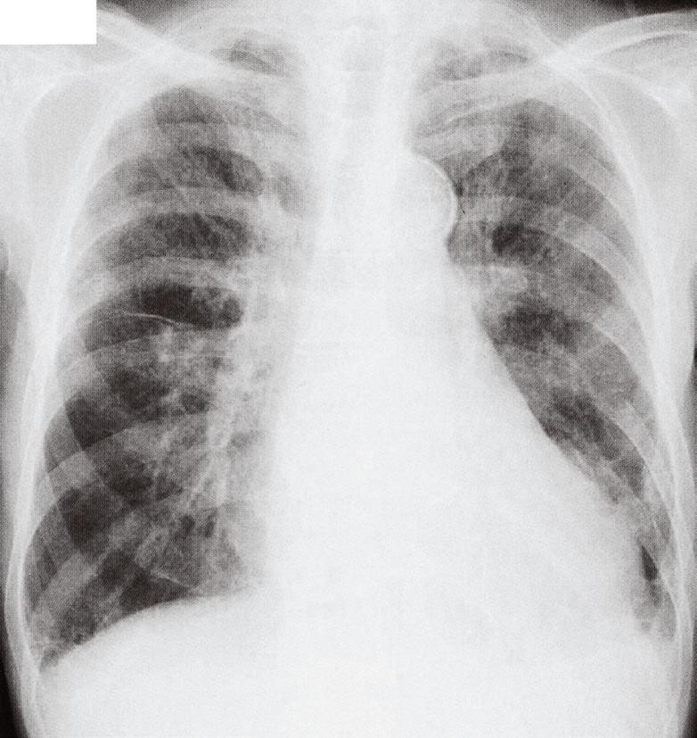
ａ 利尿薬の静注
ｂ ジゴキシンの静注
ｃ 塩酸モルヒネの静注
ｄ アドレナリンの点滴静注
ｅ 硝酸薬スプレーの舌下投与
✅
ｄ アドレナリンの点滴静注
心原性ショック（BP60/40）→強心昇圧薬（アドレナリン）が最優先。利尿薬・硝酸薬は低血圧では禁忌。
❤️ 心原性ショックの治療
心原性ショック：収縮期圧<90mmHg・四肢冷感・乏尿・意識障害→Forrester IV（CI<2.2・PCWP>18）
治療：
①強心昇圧薬：アドレナリン・ドパミン・ドブタミン
②必要に応じてIABP（大動脈内バルーンポンプ）・PCPS（体外循環）
③原因治療：AMI→PCI
×利尿薬静注：前負荷↓→低血圧悪化
×硝酸薬舌下：血管拡張→低血圧悪化→ショックで禁忌
📋 選択肢の検討
| 選択肢 | 判定 | 解説 |
|---|---|---|
| a: 利尿薬静注 | × 禁忌 | 前負荷↓→低血圧（BP60/40）をさらに悪化 |
| b: ジゴキシン静注 | × | 急性期の適応少・効果緩徐・不整脈リスク |
| c: モルヒネ静注 | × | 血管拡張・呼吸抑制→ショックで禁忌 |
| d: アドレナリン点滴 | ◎ | 強心昇圧薬→心拍出量↑・血圧↑（心原性ショックの第一選択） |
| e: 硝酸薬舌下 | × 禁忌 | 血管拡張→低血圧悪化→収縮期圧<90では禁忌 |
🎯 国試ポイント
心原性ショック（BP<90・四肢冷感）→強心昇圧薬（アドレナリン・ドパミン）が最優先。利尿薬・硝酸薬・モルヒネは低血圧では禁忌。Forrester IVでは強心薬必須→IABP・PCPSも考慮。🔍 選択肢解説
心房細動＋急性心不全(肺水腫)。a 利尿薬の静注：適切。
b ジゴキシンの静注：AFのレート調整に適切。
c 塩酸モルヒネの静注：適切。
d アドレナリンの点滴静注：頻脈・後負荷増で急性心不全に不適。✓
e 硝酸薬スプレーの舌下投与：適切。
Q.115(107D-29)📷 画像正答率 96%
65 歳の男性。呼吸困難を主訴に救急外来を受診した。2 週前から労作時の息切れを自覚するようになった。午前2 時ころ呼吸困難が出現し、徐々に増強し、座位をとっていた。午前5 時の来院時、脈拍120/ 分、不整。血圧78/50mmHg。呼吸数25/ 分。SpO2 84％（room air）。頸静脈の怒張を認める。Ⅲ音と両肺のcoarse crackles とを聴取する。両下肢は冷たく、両下腿に浮腫を認める。胸部エックス線写真を示す。
この患者で予想される血行動態はどれか。
（単位：平均肺動脈楔入圧は mmHg、心係数は L/分/m2）
この患者で予想される血行動態はどれか。
（単位：平均肺動脈楔入圧は mmHg、心係数は L/分/m2）

ａ 平均肺動脈楔入圧 2／心係数 1.8
ｂ 平均肺動脈楔入圧 12／心係数 2.6
ｃ 平均肺動脈楔入圧 12／心係数 4.0
ｄ 平均肺動脈楔入圧 25／心係数 1.8
ｅ 平均肺動脈楔入圧 25／心係数 3.8
✅
ｄ 平均肺動脈楔入圧 25／心係数 1.8
平均肺動脈楔入圧25mmHg（肺うっ血）＋心係数1.8（低灌流）＝Forrester IV群。血圧78/50・四肢冷感と一致する。
❤️ 急性肺水腫とForrester分類
急性肺水腫の血行動態：PCWP（肺動脈楔入圧）>18 mmHg：肺毛細血管圧↑→肺水腫
CI（心係数）：うっ血性（Forrester II）はCI≥2.2→CI正常or軽度低下
Forrester分類と肺水腫：
II（うっ血のみ）：PCWP↑・CI正常→利尿薬・硝酸薬
IV（うっ血＋低灌流）：PCWP↑・CI↓→強心薬追加
肺水腫の典型（Forrester II）：CI≥2.2
🎯 国試ポイント
肺水腫（PCWP↑）でも心拍出量が保たれている場合（Forrester II）→CI≥2.2。CI低下（<2.2）＋PCWP↑→Forrester IV（心原性ショック）。連問では前後の文脈でCIの具体値を判断する。🔍 選択肢解説
低血圧＋末梢冷感＋肺うっ血(Forrester IV)。a 2〜c 12：本病態(高楔入圧・低心係数)と合致しない。
d 25(高い楔入圧・低い心係数)：肺うっ血＋低灌流(Forrester IV)。✓
e 25：心係数の組合せが合致しない。
Q.116(106A-1)正答率 93%
心不全に特徴的な心臓の聴診所見はどれか。
ａ Ⅲ 音
ｂ 駆出音
ｃ 大砲音
ｄ クリック音
ｅ 心膜ノック音
✅
ａ Ⅲ音
Ⅲ音（gallop rhythm）は心不全（容量過負荷・心室充満急速）の特徴的所見。
❤️ 心不全と心音
Ⅲ音（S3 gallop）：拡張早期音（E波・急速充満期）
心室コンプライアンス↓・容量過負荷→左心不全・心筋症の特徴的所見
聴取部位：心尖部・左側臥位・ベル型聴診器
心音：S1-S2-S3（奔馬調gallop）
📋 異常心音の鑑別
| 心音 | 疾患 | 特徴 |
|---|---|---|
| Ⅲ音（S3） | 心不全・容量負荷 | 拡張早期→急速充満期（E波）・奔馬様調律 |
| Ⅳ音（S4） | 心室肥大・心筋虚血 | 拡張後期→心房収縮（A波）・高血圧性心疾患 |
| 駆出音（ejection click） | 大動脈弁狭窄・肺動脈弁狭窄 | 収縮早期高調音 |
| 大砲音（cannon sound） | 完全房室ブロック | 房室非同期→Ⅳ音増大 |
| クリック音 | 僧帽弁逸脱（MVP） | 収縮中期クリック |
| 心膜ノック音 | 収縮性心膜炎 | 拡張早期・高調音 |
🎯 国試ポイント
Ⅲ音（S3）は心不全・心筋症の特徴的所見。左側臥位・ベル型聴診器で心尖部。奔馬様調律（gallop rhythm）。Ⅳ音は心肥大・虚血。心膜ノック音は収縮性心膜炎。🔍 選択肢解説
a Ⅲ音：心不全の奔馬調律(Ⅲ音)。✓b 駆出音：AS/PSの所見。
c 大砲音：房室解離の所見。
d クリック音：僧帽弁逸脱の所見。
e 心膜ノック音：収縮性心膜炎の所見。
Q.117(106G-15)正答率 96%
うっ血性心不全で認められる浮腫の特徴はどれか。
ａ 圧痕を認める。
ｂ 顔面に初発する。
ｃ 体重減少を伴う。
ｄ 左右差を認める。
ｅ 頸静脈の虚脱を伴う。
✅
ａ 圧痕を認める
うっ血性浮腫：圧痕性（pitting edema）・下腿・足背から初発・左右対称・頸静脈怒張（体液過剰）。
❤️ うっ血性心不全の浮腫
うっ血性浮腫の特徴：①圧痕性（pitting edema）：指で押すとへこむ（血漿タンパク正常・静水圧↑）
②下腿・足背から初発：重力依存性（臥床患者は仙骨部）
③左右対称性：全身性うっ血→左右差なし
④頸静脈怒張（体液過剰・静脈圧↑）
×顔面初発：ネフローゼ（低アルブミン）・甲状腺機能低下症（粘液水腫）
×左右差：リンパ管閉塞・深部静脈血栓症
📋 浮腫の種類と特徴
| 疾患 | 特徴 | 機序 |
|---|---|---|
| うっ血性心不全 | 圧痕性・対称性・下腿から・頸静脈怒張 | 体静脈圧↑ |
| ネフローゼ症候群 | 圧痕性・顔面から・低アルブミン | 膠質浸透圧↓ |
| 肝硬変 | 圧痕性・腹水合併・黄疸 | 低アルブミン＋門脈圧↑ |
| 甲状腺機能低下症 | 非圧痕性（粘液水腫）・顔面・全身 | ムチン沈着 |
| リンパ浮腫 | 非圧痕性・左右差・上肢/下肢 | リンパ管閉塞 |
🎯 国試ポイント
うっ血性心不全の浮腫→圧痕性（pitting）・下腿から・左右対称。顔面から→ネフローゼ・甲状腺機能低下症。非圧痕性→粘液水腫・リンパ浮腫。頸静脈怒張は右心不全のサイン。🔍 選択肢解説
a 圧痕を認める：圧痕性(pitting)浮腫。✓b 顔面に初発する：下垂部に初発し誤り。
c 体重減少を伴う：体重増加を伴い誤り。
d 左右差を認める：両側性で誤り。
e 頸静脈の虚脱を伴う：頸静脈怒張を伴い誤り。
Q.118(106H-37)📷 画像正答率 96%
連問 1/2次の文を読み、118 と119 の問いに答えよ。
57 歳の男性。会社員。労作時の息苦しさを主訴に来院した。
現病歴：10 日前から夜に咳込むようになった。4 日前から自宅の階段を昇るときに息苦しさを自覚するようになり、
次第に症状が増悪したため受診した。
既往歴：43 歳時に尿管結石。会社の健康診断で、45 歳時に高血圧を、55 歳時に心房細動を指摘されたが、受診し
なかった。
生活歴：3 か月前からオウムを飼っている。
家族歴：父親が高血圧症で加療中。
現 症：意識は清明。身長167cm、体重64kg。体温36.1℃。脈拍124/ 分、不整。血圧146/84mmHg。呼吸数30/ 分。
甲状腺の腫大を認めない。聴診上、Ⅲ音を聴取する。両側の胸部でcoarse crackles を聴取する。両側の下腿に浮腫
を認める。
検査所見：心電図で心房細動を認める。胸部エックス線写真を示す。
この患者の胸部エックス線写真の所見として認められるのはどれか。
57 歳の男性。会社員。労作時の息苦しさを主訴に来院した。
現病歴：10 日前から夜に咳込むようになった。4 日前から自宅の階段を昇るときに息苦しさを自覚するようになり、
次第に症状が増悪したため受診した。
既往歴：43 歳時に尿管結石。会社の健康診断で、45 歳時に高血圧を、55 歳時に心房細動を指摘されたが、受診し
なかった。
生活歴：3 か月前からオウムを飼っている。
家族歴：父親が高血圧症で加療中。
現 症：意識は清明。身長167cm、体重64kg。体温36.1℃。脈拍124/ 分、不整。血圧146/84mmHg。呼吸数30/ 分。
甲状腺の腫大を認めない。聴診上、Ⅲ音を聴取する。両側の胸部でcoarse crackles を聴取する。両側の下腿に浮腫
を認める。
検査所見：心電図で心房細動を認める。胸部エックス線写真を示す。
この患者の胸部エックス線写真の所見として認められるのはどれか。
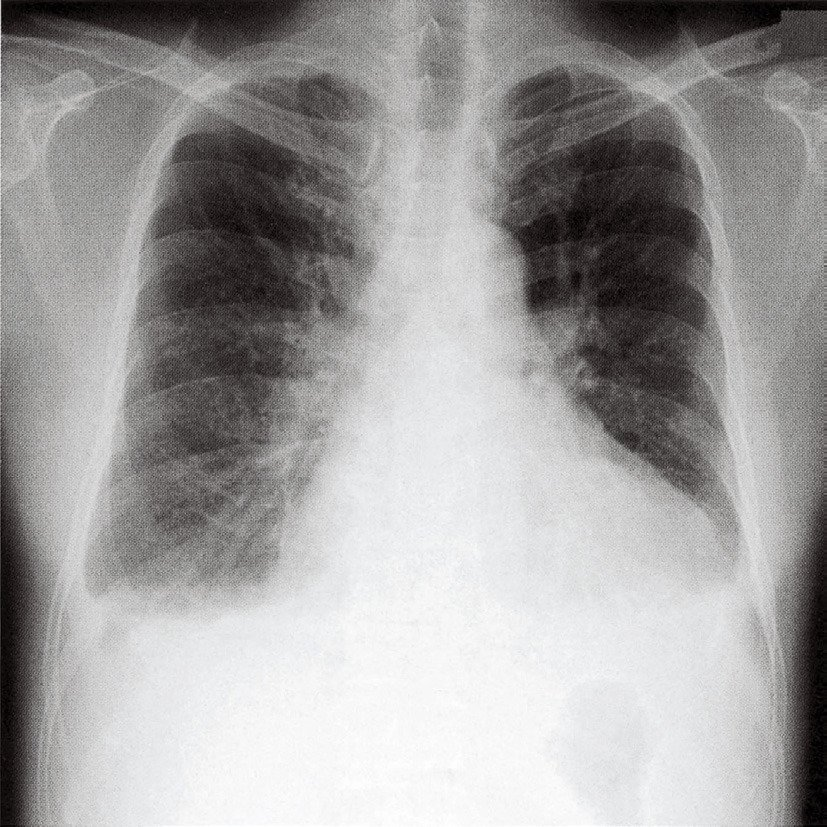
ａ 両側肺の過膨張
ｂ 気管透亮像の偏位
ｃ 下行大動脈の蛇行
ｄ 肋骨横隔膜角の鈍化
ｅ 両側肺門リンパ節の腫脹
✅
ｄ 肋骨横隔膜角の鈍化
心不全→胸水貯留→肋骨横隔膜角（CP angle）の鈍化。肺血管陰影増強・Kerley B線も特徴。
❤️ 心不全の胸部X線所見
うっ血性心不全の胸部X線：①心拡大（CTR>50%）：心胸郭比増大
②肺血管陰影増強：上肺野血管陰影↑（静脈圧↑）
③Kerley B線：肺底部水平陰影（肺間質浮腫）
④肋骨横隔膜角の鈍化（CP angle blunting）：胸水貯留（右>左）
⑤蝶型陰影：重症肺水腫（両肺門対称性浸潤影）
📋 各選択肢の鑑別
| 所見 | 疾患 | 解説 |
|---|---|---|
| a: 過膨張 | COPD・喘息 | 肺気腫→横隔膜低位・肋間腔拡大 |
| b: 気管偏位 | 緊張性気胸・大量胸水 | 患側と反対方向に偏位 |
| c: 下行大動脈蛇行 | 高齢・動脈硬化 | 心不全直接所見でない |
| d: 肋骨横隔膜角の鈍化 | 胸水貯留→心不全◎ | 150mL以上の胸水でCP angle鈍化 |
| e: 両側肺門リンパ節腫大 | サルコイドーシス・リンパ腫 | 心不全の所見でない |
🎯 国試ポイント
心不全の胸部X線：心拡大（CTR>50%）・肺血管陰影増強・Kerley B線・CP angle鈍化（胸水）。CP angle鈍化→胸水150mL以上で出現（右>左）。肺水腫では蝶型陰影。🔍 選択肢解説
心不全(心房細動・肺うっ血)。a 両側肺の過膨張：COPDの所見。
b 気管透亮像の偏位：主でない。
c 下行大動脈の蛇行：主でない。
d 肋骨横隔膜角の鈍化：胸水貯留。✓
e 両側肺門リンパ節の腫脹：サルコイドーシス等。
Q.119(106H-38)正答率 94%
連問 2/2次の文を読み、118 と119 の問いに答えよ。
57 歳の男性。会社員。労作時の息苦しさを主訴に来院した。
現病歴：10 日前から夜に咳込むようになった。4 日前から自宅の階段を昇るときに息苦しさを自覚するようになり、
次第に症状が増悪したため受診した。
既往歴：43 歳時に尿管結石。会社の健康診断で、45 歳時に高血圧を、55 歳時に心房細動を指摘されたが、受診し
なかった。
生活歴：3 か月前からオウムを飼っている。
家族歴：父親が高血圧症で加療中。
現 症：意識は清明。身長167cm、体重64kg。体温36.1℃。脈拍124/ 分、不整。血圧146/84mmHg。呼吸数30/ 分。
甲状腺の腫大を認めない。聴診上、Ⅲ音を聴取する。両側の胸部でcoarse crackles を聴取する。両側の下腿に浮腫
を認める。
検査所見：心電図で心房細動を認める。胸部エックス線写真を示す。
次に行うべき検査として適切なのはどれか。
57 歳の男性。会社員。労作時の息苦しさを主訴に来院した。
現病歴：10 日前から夜に咳込むようになった。4 日前から自宅の階段を昇るときに息苦しさを自覚するようになり、
次第に症状が増悪したため受診した。
既往歴：43 歳時に尿管結石。会社の健康診断で、45 歳時に高血圧を、55 歳時に心房細動を指摘されたが、受診し
なかった。
生活歴：3 か月前からオウムを飼っている。
家族歴：父親が高血圧症で加療中。
現 症：意識は清明。身長167cm、体重64kg。体温36.1℃。脈拍124/ 分、不整。血圧146/84mmHg。呼吸数30/ 分。
甲状腺の腫大を認めない。聴診上、Ⅲ音を聴取する。両側の胸部でcoarse crackles を聴取する。両側の下腿に浮腫
を認める。
検査所見：心電図で心房細動を認める。胸部エックス線写真を示す。
次に行うべき検査として適切なのはどれか。
ａ 心エコー検査
ｂ 喀痰Gram 染色
ｃ スパイロメトリ
ｄ 胸部高分解能CT
ｅ 心筋シンチグラフィ
✅
ａ 心エコー検査
心不全の診断・評価に心エコー（EF・壁運動・弁膜症評価）が最優先。
❤️ 心不全の検査
心エコー（心臓超音波検査）の評価項目：①EF（駆出分画）：収縮機能評価（HFrEF vs HFpEF）
②壁運動：局所壁運動異常（虚血性心疾患）
③弁膜症：狭窄・逆流の評価
④心腔サイズ・心肥大
⑤心嚢液貯留
⑥組織ドップラー：拡張機能評価
非侵襲的・リアルタイム・繰り返し施行可能→心不全評価の基本検査
🎯 国試ポイント
心不全疑いの次の検査→心エコーが最優先（EF・弁膜症・壁運動を評価）。スパイロメトリは呼吸機能→肺疾患の鑑別。心筋シンチは虚血評価（心エコー後の精査）。胸部HRCTは間質性肺炎等。🔍 選択肢解説
a 心エコー検査：心機能・弁膜症の評価(心不全の精査)。✓b 喀痰Gram染色：感染主体でない。
c スパイロメトリ：急性期に不適。
d 胸部高分解能CT：間質性肺疾患用。
e 心筋シンチグラフィ：緊急でない。
Q.120(105B-14)正答率 91%
左心不全でみられる身体所見はどれか。
ａ 頸静脈怒張
ｂ 呼気性喘鳴
ｃ 下腿浮腫
ｄ 肝腫大
ｅ 腹 水
✅
ｂ 呼気性喘鳴
左心不全（肺うっ血）→喘鳴（cardiac wheeze）・捻髪音・呼吸困難。頸静脈怒張・浮腫・肝腫大は右心不全。
❤️ 左心不全と右心不全の所見
左心不全の所見（肺うっ血）：呼気性喘鳴（cardiac wheeze）・捻髪音（肺底部）・呼吸困難・起座呼吸・PND・肺水腫
右心不全の所見（体うっ血）：
頸静脈怒張・肝腫大・下腿浮腫・腹水・浮腫
cardiac wheeze（心臓喘息）：気道周囲浮腫→気管支狭窄→呼気性喘鳴→気管支喘息との鑑別が必要
📋 選択肢の検討
| 選択肢 | 判定 | 解説 |
|---|---|---|
| a: 頸静脈怒張 | 右心不全 | 体静脈圧↑→JVD |
| b: 呼気性喘鳴 | ◎ 左心不全 | cardiac wheeze・気道浮腫→気管支狭窄 |
| c: 下腿浮腫 | 右心不全 | 体静脈圧↑・重力依存性 |
| d: 肝腫大 | 右心不全 | うっ血肝・肝静脈圧↑ |
| e: 腹水 | 右心不全 | 門脈圧↑・体静脈圧↑ |
🎯 国試ポイント
左心不全の所見：肺うっ血→捻髪音・cardiac wheeze（呼気性喘鳴）・起座呼吸。右心不全は体うっ血→頸静脈怒張・肝腫大・下腿浮腫。cardiac wheezeと気管支喘息の鑑別：心不全の既往・BNP↑・胸部X線。🔍 選択肢解説
a 頸静脈怒張：右心不全の所見。b 呼気性喘鳴：心臓喘息(左心不全の肺うっ血)。✓
c 下腿浮腫：右心不全の所見。
d 肝腫大：右心不全の所見。
e 腹水：右心不全の所見。
Q.121(105F-23)正答率 99%
72 歳の女性。早朝、呼吸困難のため搬入された。以前から高血圧を指摘されていた。搬入時の血圧220/140mmHg。
呼吸困難で会話もままならない。ピンク色の泡沫状喀痰がみられる。
診察時の患者の体位として適切なのはどれか。
呼吸困難で会話もままならない。ピンク色の泡沫状喀痰がみられる。
診察時の患者の体位として適切なのはどれか。
ａ 立 位
ｂ 半坐位
ｃ 仰臥位
ｄ 側臥位
ｅ 腹臥位
✅
ｂ 半坐位
心不全（肺水腫）→半坐位（起座位）：横隔膜を下げ・静脈還流↓・前負荷軽減→呼吸楽。仰臥位は禁忌。
❤️ 肺水腫の体位管理
半坐位（起座位）の効果：①横隔膜が下がる→肺容量↑→換気改善
②静脈還流（前負荷）↓→心臓への容量負荷軽減
③呼吸補助筋が使いやすい→呼吸努力軽減
→肺水腫・急性心不全の標準的体位
×仰臥位：横隔膜が上昇・静脈還流↑→前負荷増大→肺うっ血悪化
×腹臥位（prone）：重症ARDS等に使用→心不全急性期の体位でない
🎯 国試ポイント
急性肺水腫・心不全の体位→半坐位（起座位）が正解。仰臥位は禁忌（前負荷増大）。立位は血圧低下リスクあり・安定性欠く。Q79と同じポイント：心不全は座位/起座位で呼吸楽。🔍 選択肢解説
高血圧緊急症＋急性肺水腫。a 立位：不安定。
b 半坐位：肺うっ血の軽減に半坐位(起座位)。✓
c 仰臥位：呼吸困難が増悪。
d 側臥位・e 腹臥位：不適。
Q.122(105H-31)正答率 97%
連問 1/264 歳の男性。労作時の息切れを主訴に来院した。
現病歴：半年前から立ち仕事で疲れやすくなったが、年のせいだと思い医療機関を受診していなかった。1 か月前か
ら階段を昇るときの息切れが強くなり、徐々に増悪してきた。
既往歴：50 歳代のとき健康診断で肥満と高血圧とを指摘されたが、医療機関は受診していない。
生活歴：自営業。喫煙は20 本/ 日を44 年間。飲酒は日本酒換算で2 合半/ 日を30 年間。
家族歴：特記すべきことはない。
現 症：身長159cm、体重78kg、腹囲94cm。体温36.8℃。呼吸数26/ 分。脈拍104/ 分、不整。血圧168/92 mmHg。
頸静脈の怒張を認める。両側下肺野にcoarse crackles を聴取する。両側下腿の浮腫を認める。
検査所見：血液所見：赤血球406 万、Hb 13.7g/dl、Ht 41％、白血球8,700、血小板26 万。血液生化学所見：血糖
108mg/dl、HbA1c 5.5％（基準4.3 ～5.8）、総蛋白6.4g/dl、アルブミン3.6g/dl、尿素窒素19mg/dl、クレアチニ
ン1.0mg/dl、LDL コレステロール126mg/dl（基準65 ～139）、HDL コレステロール38mg/dl、トリグリセリド
286mg/dl、AST 48IU/l、ALT 46IU/l、LD 346IU/l（基準176 ～353）、ALP 358IU/l（基準115 ～359）、γ-GTP
76IU/l（基準8 ～50）、Na 136mEq/l、K 4.1mEq/l、Cl 101mEq/l。CRP 0.3mg/dl。心電図で心房細動を認める。
胸部エックス線写真で心胸郭比64％。
次に必要な検査はどれか。
現病歴：半年前から立ち仕事で疲れやすくなったが、年のせいだと思い医療機関を受診していなかった。1 か月前か
ら階段を昇るときの息切れが強くなり、徐々に増悪してきた。
既往歴：50 歳代のとき健康診断で肥満と高血圧とを指摘されたが、医療機関は受診していない。
生活歴：自営業。喫煙は20 本/ 日を44 年間。飲酒は日本酒換算で2 合半/ 日を30 年間。
家族歴：特記すべきことはない。
現 症：身長159cm、体重78kg、腹囲94cm。体温36.8℃。呼吸数26/ 分。脈拍104/ 分、不整。血圧168/92 mmHg。
頸静脈の怒張を認める。両側下肺野にcoarse crackles を聴取する。両側下腿の浮腫を認める。
検査所見：血液所見：赤血球406 万、Hb 13.7g/dl、Ht 41％、白血球8,700、血小板26 万。血液生化学所見：血糖
108mg/dl、HbA1c 5.5％（基準4.3 ～5.8）、総蛋白6.4g/dl、アルブミン3.6g/dl、尿素窒素19mg/dl、クレアチニ
ン1.0mg/dl、LDL コレステロール126mg/dl（基準65 ～139）、HDL コレステロール38mg/dl、トリグリセリド
286mg/dl、AST 48IU/l、ALT 46IU/l、LD 346IU/l（基準176 ～353）、ALP 358IU/l（基準115 ～359）、γ-GTP
76IU/l（基準8 ～50）、Na 136mEq/l、K 4.1mEq/l、Cl 101mEq/l。CRP 0.3mg/dl。心電図で心房細動を認める。
胸部エックス線写真で心胸郭比64％。
次に必要な検査はどれか。
ａ 心エコー検査
ｂ 呼吸機能検査
ｃ 24 時間血圧測定
ｄ 心筋シンチグラフィ
ｅ 経口ブドウ糖負荷試験
✅
ａ 心エコー検査
心不全の原因・重症度評価→心エコー（EF・壁運動・弁膜症）が最優先。
❤️ 高血圧性心不全の評価
心エコーの評価項目：①EF：収縮機能（HFrEF vs HFpEF）
②左室肥大（LVH）：高血圧性心疾患の特徴
③左房拡大：拡張機能障害のサロゲートマーカー
④組織ドップラー（E/e'）：充満圧の推定
⑤弁膜症の除外
高血圧性心疾患→HFpEF（EF保持型）が多い→エコーで拡張機能評価
🎯 国試ポイント
心不全の最重要検査→心エコー（EF・壁運動・弁膜症・拡張機能）。高血圧性心不全はHFpEFが多い→拡張機能障害（E/e'↑）。呼吸機能は肺疾患鑑別。24時間血圧測定は降圧治療の評価用（急性期は不要）。🔍 選択肢解説
心不全(心房細動・肥満・高血圧)。a 心エコー検査：心機能・弁膜症の評価。✓
b 呼吸機能検査：急性期に不適。
c 24時間血圧測定：緊急でない。
d 心筋シンチグラフィ：緊急でない。
e 経口ブドウ糖負荷試験：主でない。
Q.123(105H-32)正答率 94%
連問 2/264 歳の男性。労作時の息切れを主訴に来院した。
現病歴：半年前から立ち仕事で疲れやすくなったが、年のせいだと思い医療機関を受診していなかった。1 か月前か
ら階段を昇るときの息切れが強くなり、徐々に増悪してきた。
既往歴：50 歳代のとき健康診断で肥満と高血圧とを指摘されたが、医療機関は受診していない。
生活歴：自営業。喫煙は20 本/ 日を44 年間。飲酒は日本酒換算で2 合半/ 日を30 年間。
家族歴：特記すべきことはない。
現 症：身長159cm、体重78kg、腹囲94cm。体温36.8℃。呼吸数26/ 分。脈拍104/ 分、不整。血圧168/92 mmHg。
頸静脈の怒張を認める。両側下肺野にcoarse crackles を聴取する。両側下腿の浮腫を認める。
検査所見：血液所見：赤血球406 万、Hb 13.7g/dl、Ht 41％、白血球8,700、血小板26 万。血液生化学所見：血糖
108mg/dl、HbA1c 5.5％（基準4.3 ～5.8）、総蛋白6.4g/dl、アルブミン3.6g/dl、尿素窒素19mg/dl、クレアチニ
ン1.0mg/dl、LDL コレステロール126mg/dl（基準65 ～139）、HDL コレステロール38mg/dl、トリグリセリド
286mg/dl、AST 48IU/l、ALT 46IU/l、LD 346IU/l（基準176 ～353）、ALP 358IU/l（基準115 ～359）、γ-GTP
76IU/l（基準8 ～50）、Na 136mEq/l、K 4.1mEq/l、Cl 101mEq/l。CRP 0.3mg/dl。心電図で心房細動を認める。
胸部エックス線写真で心胸郭比64％。
治療を開始するにあたり、行うよう指導すべき生活習慣として適切でないのはどれか。
現病歴：半年前から立ち仕事で疲れやすくなったが、年のせいだと思い医療機関を受診していなかった。1 か月前か
ら階段を昇るときの息切れが強くなり、徐々に増悪してきた。
既往歴：50 歳代のとき健康診断で肥満と高血圧とを指摘されたが、医療機関は受診していない。
生活歴：自営業。喫煙は20 本/ 日を44 年間。飲酒は日本酒換算で2 合半/ 日を30 年間。
家族歴：特記すべきことはない。
現 症：身長159cm、体重78kg、腹囲94cm。体温36.8℃。呼吸数26/ 分。脈拍104/ 分、不整。血圧168/92 mmHg。
頸静脈の怒張を認める。両側下肺野にcoarse crackles を聴取する。両側下腿の浮腫を認める。
検査所見：血液所見：赤血球406 万、Hb 13.7g/dl、Ht 41％、白血球8,700、血小板26 万。血液生化学所見：血糖
108mg/dl、HbA1c 5.5％（基準4.3 ～5.8）、総蛋白6.4g/dl、アルブミン3.6g/dl、尿素窒素19mg/dl、クレアチニ
ン1.0mg/dl、LDL コレステロール126mg/dl（基準65 ～139）、HDL コレステロール38mg/dl、トリグリセリド
286mg/dl、AST 48IU/l、ALT 46IU/l、LD 346IU/l（基準176 ～353）、ALP 358IU/l（基準115 ～359）、γ-GTP
76IU/l（基準8 ～50）、Na 136mEq/l、K 4.1mEq/l、Cl 101mEq/l。CRP 0.3mg/dl。心電図で心房細動を認める。
胸部エックス線写真で心胸郭比64％。
治療を開始するにあたり、行うよう指導すべき生活習慣として適切でないのはどれか。
ａ 運 動
ｂ 禁 煙
ｃ 塩分制限
ｄ エネルギー摂取制限
ｅ アルコール摂取制限
✅
ａ 運動
急性・重症心不全では安静が必要で運動は禁忌。安定した慢性心不全では心臓リハビリが有益だが増悪期は禁忌。
❤️ 心不全の生活指導
心不全患者の生活管理：①塩分制限：6g/日未満→体液過剰予防
②水分制限：重症例1〜1.5L/日
③禁煙：心血管リスク↓
④アルコール制限：アルコール性心筋症・血圧上昇防止
⑤体重管理（肥満是正）：代謝改善
⑥体重測定：毎日→体液貯留の早期発見
× 急性期・増悪期の運動：心臓への負担↑→禁忌
○ 安定期の有酸素運動（心臓リハビリ）：QOL・運動耐容能↑
🎯 国試ポイント
「適切でない」生活指導→急性心不全・増悪期での運動は禁忌。安定慢性心不全では心臓リハビリ（有酸素運動）は有効だが、急性増悪・高血圧性肺水腫（BP220/140）では安静が必要。禁煙・塩分制限・禁酒は全例で指導。🔍 選択肢解説
心不全増悪期の生活指導。a 運動：増悪期に運動負荷は不適(安定後に心臓リハビリ)。✓（適切でない）
b 禁煙：適切。
c 塩分制限：適切。
d エネルギー摂取制限：肥満に適切。
e アルコール摂取制限：適切。
Q.124(104G-55)3択正答率 90%
72 歳の男性。呼吸困難のため搬入された。1 か月前から労作時の息切れを感じていた。1 週前から就寝中に咳が出て息苦しくなり目が覚めることがあった。前日から座っていても息苦しさを生じるようになった。高血圧と心筋梗塞との既往がある。喫煙歴はない。診察時には苦悶様であり、咳と喘鳴とを認める。意識は清明。体温36.0℃。脈拍108/ 分、整。血圧170/104mmHg。心尖部に2/6 度の収縮期逆流性雑音を聴取し、両肺でcoarse crackles を広範囲に聴取する。
診断に有用な診察所見はどれか。3 つ選べ。
診断に有用な診察所見はどれか。3 つ選べ。
ａ 奇 脈
ｂ 頸静脈怒張
ｃ 胸部の鼓音
ｄ Ⅲ 音
ｅ 浮 腫
✅
ｂ 頸静脈怒張 ＋ ｄ Ⅲ音 ＋ ｅ 浮腫
両心不全の所見：頸静脈怒張（右心不全）＋Ⅲ音gallop（左心不全/容量負荷）＋浮腫（右心不全）。
❤️ 両心不全の身体所見
右心不全所見：頸静脈怒張（JVD）・肝腫大・下腿浮腫・腹水左心不全所見：捻髪音・cardiac wheeze・Ⅲ音（gallop）
→両心不全では両方の所見が混在
📋 選択肢の検討
| 選択肢 | 判定 | 解説 |
|---|---|---|
| a: 奇脈 | × | 奇脈（吸気時BP>10mmHg低下）→心タンポナーデ・収縮性心膜炎・重症喘息 |
| b: 頸静脈怒張 | ◎ | 右心不全→体静脈圧↑→JVD |
| c: 胸部鼓音 | × | 鼓音は気胸（空気貯留）の所見。心不全は濁音（胸水） |
| d: Ⅲ音 | ◎ | 左心不全・容量過負荷→gallop rhythm（拡張早期） |
| e: 浮腫 | ◎ | 右心不全→体静脈圧↑→下腿浮腫（圧痕性） |
🎯 国試ポイント
両心不全の三大徴候：頸静脈怒張（右）＋Ⅲ音（左）＋浮腫（右）。奇脈は心タンポナーデのサイン（Kussmaul徴候・奇脈）。胸部鼓音は気胸→心不全は濁音（胸水）。🔍 選択肢解説
急性心不全(MR・肺水腫)。a 奇脈：タンポナーデの所見。
b 頸静脈怒張：うっ血/右心不全。✓
c 胸部の鼓音：気胸の所見。
d Ⅲ音：心不全。✓
e 浮腫：体液貯留。✓
Q.125(104I-24)正答率 77%
病態と治療薬の組合せで誤っているのはどれか。
ａ 急性右心不全 ――――――――― β遮断薬
ｂ 慢性右心不全 ――――――――― 利尿薬
ｃ 急性左心不全 ――――――――― 酸素投与
ｄ 慢性左心不全 ――――――――― アンジオテンシン変換酵素阻害薬
ｅ 慢性両心不全 ――――――――― ジギタリス
✅
ａ 急性右心不全 ――――――――― β遮断薬
急性右心不全（例：急性右室梗塞・急性肺塞栓）にβ遮断薬は禁忌（陰性変力作用→ショック悪化）。
❤️ 急性右心不全とβ遮断薬
急性右心不全の原因：急性肺塞栓・右室梗塞・重症肺高血圧病態：右室後負荷↑or右室収縮力↓→右室拡大→低心拍出
急性右心不全の治療：
①原因治療（肺塞栓→tPA・抗凝固）
②輸液（右室前負荷維持）
③強心薬（ドブタミン）
β遮断薬は禁忌：
陰性変力・陰性変時作用→心拍出量↓→ショック悪化
急性心不全全般にβ遮断薬は原則禁忌
🎯 国試ポイント
急性心不全（右・左両方）にβ遮断薬は禁忌。慢性安定期HFrEFでは予後改善薬として有用だが、急性期は心収縮力↓→増悪。急性右心不全→輸液＋強心薬（ドブタミン）が適切。🔍 選択肢解説
a 急性右心不全―β遮断薬：急性心不全にβ遮断薬は禁忌で誤り。✓b 慢性右心不全―利尿薬：正しい。
c 急性左心不全―酸素投与：正しい。
d 慢性左心不全―アンジオテンシン変換酵素阻害薬：正しい。
e 慢性両心不全―ジギタリス：正しい。
Q.126(104I-27)正答率 78%
高心拍出性心不全をきたさないのはどれか。
ａ 貧 血
ｂ 動静脈瘻
ｃ 肺血栓塞栓症
ｄ 甲状腺機能亢進症
ｅ ビタミンB1 欠乏症
✅
ｃ 肺血栓塞栓症
肺血栓塞栓症→右室後負荷↑→低心拍出性心不全（右心不全）。貧血・AV瘻・甲状腺機能亢進症・脚気は高心拍出性。
❤️ 高心拍出性心不全
高心拍出性心不全の原因（末梢需要↑→心拍出量を増やしても追いつかない）：①貧血：酸素運搬↓→心拍出量代償↑
②動静脈瘻（AV fistula）：静脈への直接還流→前負荷↑
③甲状腺機能亢進症：代謝↑→心拍出量要求↑
④ビタミンB₁欠乏（脚気）：末梢血管拡張→前負荷↑
⑤妊娠・Paget病・多発性骨髄腫
肺血栓塞栓症：肺血管抵抗↑→右室後負荷↑→低心拍出性右心不全（高心拍出性でない）
📋 選択肢の確認
| 選択肢 | 判定 | 解説 |
|---|---|---|
| a: 貧血 | 高心拍出性◎ | 酸素運搬↓→心拍出量↑で代償→高拍出性心不全 |
| b: 動静脈瘻 | 高心拍出性◎ | 前負荷↑↑→高心拍出量 |
| c: 肺血栓塞栓症 | × 低心拍出性 | 右室後負荷↑→低心拍出・右心不全 |
| d: 甲状腺機能亢進症 | 高心拍出性◎ | 代謝亢進・頻脈→高拍出性 |
| e: ビタミンB₁欠乏 | 高心拍出性◎ | 末梢血管拡張→前負荷↑→高拍出性（脚気心） |
🎯 国試ポイント
高心拍出性心不全の原因：貧血・AV瘻・甲状腺機能亢進症・ビタミンB₁欠乏（脚気心）・妊娠。肺血栓塞栓症は低心拍出性心不全（右心不全）→高心拍出性でない。🔍 選択肢解説
高心拍出性心不全＝貧血・動静脈瘻・甲状腺機能亢進症・脚気。a 貧血：高拍出性。
b 動静脈瘻：高拍出性。
c 肺血栓塞栓症：低拍出(右心不全)で高心拍出性でない。✓
d 甲状腺機能亢進症：高拍出性。
e ビタミンB1欠乏症：脚気心で高拍出性。
Q.127(103B-21)正答率 97%
右心不全の徴候でないのはどれか。
ａ 肺水腫
ｂ 肝腫大
ｃ 胸水貯留
ｄ 下腿浮腫
ｅ 頸静脈怒張
✅
ａ 肺水腫
肺水腫は左心不全（肺毛細血管圧↑）の所見。右心不全は体静脈圧↑→頸静脈怒張・肝腫大・下腿浮腫・腹水。
❤️ 右心不全 vs 左心不全
右心不全の所見（体うっ血）：①頸静脈怒張（JVD）：体静脈圧↑
②肝腫大（うっ血肝）：肝静脈圧↑
③下腿浮腫：重力依存性浮腫
④腹水：腹腔内静脈圧↑
⑤胸水：体静脈圧↑
左心不全の所見（肺うっ血）：
肺水腫・起座呼吸・PND・捻髪音・cardiac wheeze
左心不全が進行→両心不全→右心不全症状も出現
📋 選択肢の確認
| 選択肢 | 判定 | 解説 |
|---|---|---|
| a: 肺水腫 | ◎ 左心不全 | 肺毛細血管圧↑（PCWP>18）→肺胞内液貯留 |
| b: 肝腫大 | 右心不全 | うっ血肝・肝静脈圧↑ |
| c: 胸水貯留 | 右心不全（多い） | 体静脈圧↑・右>左 |
| d: 下腿浮腫 | 右心不全 | 体静脈圧↑・重力依存性 |
| e: 頸静脈怒張 | 右心不全 | JVD→体静脈圧↑のサイン |
🎯 国試ポイント
肺水腫は左心不全の所見（PCWP↑→肺胞内液貯留）。右心不全は体うっ血→頸静脈怒張・肝腫大・下腿浮腫・腹水。「右心不全でないのはどれか」→肺水腫が正解。🔍 選択肢解説
a 肺水腫：左心不全の所見で右心不全でない。✓b 肝腫大：右心不全の徴候。
c 胸水貯留：右心不全の徴候。
d 下腿浮腫：右心不全の徴候。
e 頸静脈怒張：右心不全の徴候。